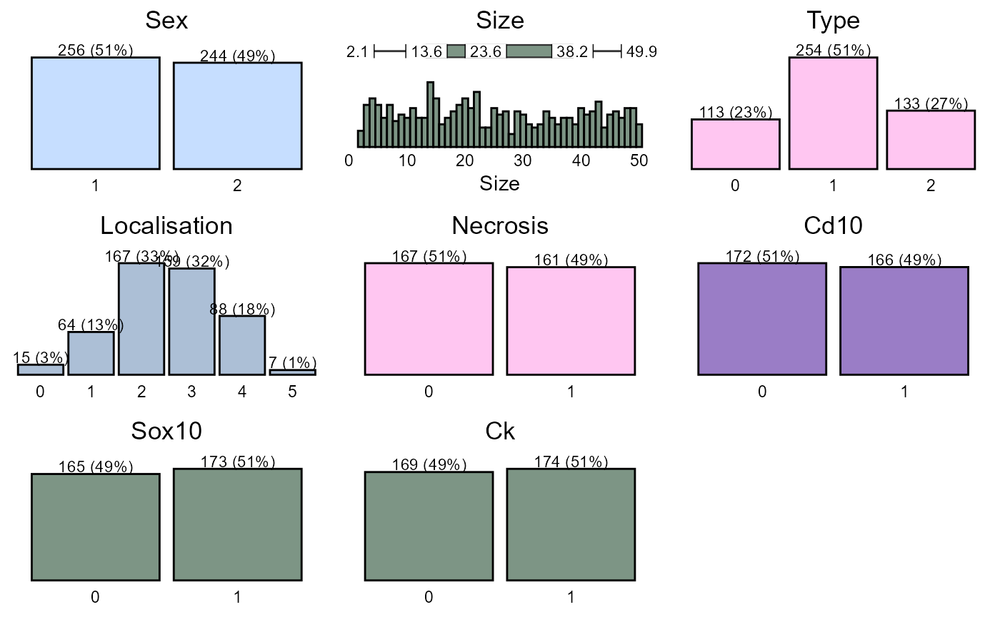
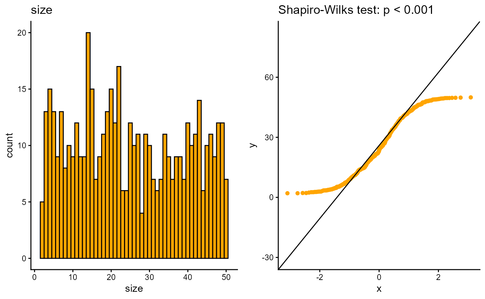

Data Management
data_management.RmdIntroduction
This article is a thorough guide to data management in our. It mainly uses the dplyr package with additional cancR functions. The article is structured as chapters, where each chapter describes a specific task and should work as a library.
Loading the cancR package
First we load the cancR package. The package automatically loads many packages useful for data management
Data
The cancR package comes with ready-to-use datasets. In this article we use the redcap_df dataset which imitates a dataset exported directly from redcap.
Combining functions with the piping operator
It is advised to combine the functions described in this article into
one code chunk that runs all functions at once. The functions are
combined with the symbol %>% called a pipe. The shortcut
for a pipe is ctrl+shift+m.
Piping starts by specifying the dataset of which the analyses should be performed. After this all subsequent functions are separated by a pipe. In the following example we start in the dataset “redcap_df”, where we subsequently select the variables id, sex and birth, add a new variable called “new_variable” and lastly filter so that we subset the dataset to rows where type = 1. All these functions are combined into a piping structure and assigned to a new object named “new_data”
Data inspection
Before starting on data management, it is important to get an overview of the dataset.
The entire dataset can be expected by either clicking on the dataset
in the environment below or with the command View()
For a simpler inspection, head() shows only the first
six rows in the console
head(redcap_df)
#> id sex age birth followup date_of_surgery size type localisation
#> 1 1 1 79.1 20-09-1929 03-04-2023 2008-11-03 7.302734 1 3
#> 2 2 2 38.1 12-10-1953 18-12-2025 1991-11-13 20.043036 1 1
#> 3 3 1 60.6 11-05-1948 21-09-2025 2008-12-17 42.412003 1 2
#> 4 4 1 45.2 22-04-1949 11-02-2022 1994-07-17 27.853775 1 3
#> 5 5 2 39.5 18-01-1966 21-04-2022 2005-07-16 25.587530 2 1
#> 6 6 1 81.2 06-11-1925 17-07-2023 2007-02-02 49.415904 2 3
#> necrosis margins cd10 sox10 ck death_date recurrence_date metastasis_date
#> 1 NA 0 1 1 1 <NA> 2015-03-22 <NA>
#> 2 NA 0 0 0 NA <NA> <NA> <NA>
#> 3 0 1 NA NA 0 2017-09-02 <NA> <NA>
#> 4 1 0 0 0 0 2018-10-04 2011-12-31 <NA>
#> 5 NA 0 0 NA 0 <NA> <NA> <NA>
#> 6 1 1 1 1 0 <NA> <NA> <NA>All column names can be shown with names()
names(redcap_df)
#> [1] "id" "sex" "age" "birth"
#> [5] "followup" "date_of_surgery" "size" "type"
#> [9] "localisation" "necrosis" "margins" "cd10"
#> [13] "sox10" "ck" "death_date" "recurrence_date"
#> [17] "metastasis_date"It is also important to assess the structure of the data to check for correct formatting. E.g. are date-variables coded as dates, continouous variables as numeric etc.
str(redcap_df)
#> 'data.frame': 500 obs. of 17 variables:
#> $ id : int 1 2 3 4 5 6 7 8 9 10 ...
#> $ sex : num 1 2 1 1 2 1 1 1 2 2 ...
#> $ age : num 79.1 38.1 60.6 45.2 39.5 81.2 74.9 38.8 31.8 51.3 ...
#> $ birth : chr "20-09-1929" "12-10-1953" "11-05-1948" "22-04-1949" ...
#> $ followup : chr "03-04-2023" "18-12-2025" "21-09-2025" "11-02-2022" ...
#> $ date_of_surgery: chr "2008-11-03" "1991-11-13" "2008-12-17" "1994-07-17" ...
#> $ size : num 7.3 20 42.4 27.9 25.6 ...
#> $ type : int 1 1 1 1 2 2 0 0 0 2 ...
#> $ localisation : int 3 1 2 3 1 3 2 5 3 1 ...
#> $ necrosis : num NA NA 0 1 NA 1 0 1 NA NA ...
#> $ margins : chr "0" "0" "1" "0" ...
#> $ cd10 : num 1 0 NA 0 0 1 0 0 1 1 ...
#> $ sox10 : num 1 0 NA 0 NA 1 1 0 1 1 ...
#> $ ck : num 1 NA 0 0 0 0 0 NA 0 1 ...
#> $ death_date : chr NA NA "2017-09-02" "2018-10-04" ...
#> $ recurrence_date: chr "2015-03-22" NA NA "2011-12-31" ...
#> $ metastasis_date: chr NA NA NA NA ...Here we see that all date variables are coded as characters and not date. The conversion to date are described in the chapter: “Date formatting”
To get a graphical glimpse of the data we can use the summarisR() function:

And to exploit the number of missing values we use the missR() function
missR(redcap_df)
#> Nas detected in the following variables:
#>
#> variable NAs
#> 1 metastasis_date 339
#> 2 death_date 314
#> 3 recurrence_date 254
#> 4 necrosis 172
#> 5 cd10 162
#> 6 sox10 162
#> 7 ck 157We can also check if numerical variables are normally distributed with the distributR() function
distributR(redcap_df,
vars = size)
Data management
The next section goes through the most basic data management functions from the dplyr package.
Selection of variables
Variables/columns can be selected and removed with the select() function.
redcap_df %>%
select(id, sex, birth) %>%
head
#> id sex birth
#> 1 1 1 20-09-1929
#> 2 2 2 12-10-1953
#> 3 3 1 11-05-1948
#> 4 4 1 22-04-1949
#> 5 5 2 18-01-1966
#> 6 6 1 06-11-1925Variables are removed with a minus sign.
redcap_df %>%
select(-id, -birth) %>%
head
#> sex age followup date_of_surgery size type localisation necrosis
#> 1 1 79.1 03-04-2023 2008-11-03 7.302734 1 3 NA
#> 2 2 38.1 18-12-2025 1991-11-13 20.043036 1 1 NA
#> 3 1 60.6 21-09-2025 2008-12-17 42.412003 1 2 0
#> 4 1 45.2 11-02-2022 1994-07-17 27.853775 1 3 1
#> 5 2 39.5 21-04-2022 2005-07-16 25.587530 2 1 NA
#> 6 1 81.2 17-07-2023 2007-02-02 49.415904 2 3 1
#> margins cd10 sox10 ck death_date recurrence_date metastasis_date
#> 1 0 1 1 1 <NA> 2015-03-22 <NA>
#> 2 0 0 0 NA <NA> <NA> <NA>
#> 3 1 NA NA 0 2017-09-02 <NA> <NA>
#> 4 0 0 0 0 2018-10-04 2011-12-31 <NA>
#> 5 0 0 NA 0 <NA> <NA> <NA>
#> 6 1 1 1 0 <NA> <NA> <NA>It is also possible to choose variable based on text patterns, which is useful for variables with a common prefix/suffix such as _date
redcap_df %>%
select(contains("_date")) %>%
head
#> death_date recurrence_date metastasis_date
#> 1 <NA> 2015-03-22 <NA>
#> 2 <NA> <NA> <NA>
#> 3 2017-09-02 <NA> <NA>
#> 4 2018-10-04 2011-12-31 <NA>
#> 5 <NA> <NA> <NA>
#> 6 <NA> <NA> <NA>The text pattern can also be starts_with, ends_with and matches for an exact match.
If we need to select a large range of variables we call the first and last separated by a colon:
redcap_df %>%
select(sex:sox10) %>%
head
#> sex age birth followup date_of_surgery size type localisation
#> 1 1 79.1 20-09-1929 03-04-2023 2008-11-03 7.302734 1 3
#> 2 2 38.1 12-10-1953 18-12-2025 1991-11-13 20.043036 1 1
#> 3 1 60.6 11-05-1948 21-09-2025 2008-12-17 42.412003 1 2
#> 4 1 45.2 22-04-1949 11-02-2022 1994-07-17 27.853775 1 3
#> 5 2 39.5 18-01-1966 21-04-2022 2005-07-16 25.587530 2 1
#> 6 1 81.2 06-11-1925 17-07-2023 2007-02-02 49.415904 2 3
#> necrosis margins cd10 sox10
#> 1 NA 0 1 1
#> 2 NA 0 0 0
#> 3 0 1 NA NA
#> 4 1 0 0 0
#> 5 NA 0 0 NA
#> 6 1 1 1 1Renaming variables
Renaming of variable names can be done using rename(). The syntax is “new name” = “old name”
redcap_df %>%
rename(index = date_of_surgery,
cytokeratin = ck) %>%
head
#> id sex age birth followup index size type localisation
#> 1 1 1 79.1 20-09-1929 03-04-2023 2008-11-03 7.302734 1 3
#> 2 2 2 38.1 12-10-1953 18-12-2025 1991-11-13 20.043036 1 1
#> 3 3 1 60.6 11-05-1948 21-09-2025 2008-12-17 42.412003 1 2
#> 4 4 1 45.2 22-04-1949 11-02-2022 1994-07-17 27.853775 1 3
#> 5 5 2 39.5 18-01-1966 21-04-2022 2005-07-16 25.587530 2 1
#> 6 6 1 81.2 06-11-1925 17-07-2023 2007-02-02 49.415904 2 3
#> necrosis margins cd10 sox10 cytokeratin death_date recurrence_date
#> 1 NA 0 1 1 1 <NA> 2015-03-22
#> 2 NA 0 0 0 NA <NA> <NA>
#> 3 0 1 NA NA 0 2017-09-02 <NA>
#> 4 1 0 0 0 0 2018-10-04 2011-12-31
#> 5 NA 0 0 NA 0 <NA> <NA>
#> 6 1 1 1 1 0 <NA> <NA>
#> metastasis_date
#> 1 <NA>
#> 2 <NA>
#> 3 <NA>
#> 4 <NA>
#> 5 <NA>
#> 6 <NA>Create/modify variables
Variables can be created or modified with the mutate() function with the syntax: mutate(variable = condition). If the variable already exists in the dataset, it is modified automatically.
We now recode necrosis, so that 1 = yes and everything else is “no”.
redcap_df %>%
mutate(necrosis = ifelse(necrosis == 1, "yes", "no")) %>%
head
#> id sex age birth followup date_of_surgery size type localisation
#> 1 1 1 79.1 20-09-1929 03-04-2023 2008-11-03 7.302734 1 3
#> 2 2 2 38.1 12-10-1953 18-12-2025 1991-11-13 20.043036 1 1
#> 3 3 1 60.6 11-05-1948 21-09-2025 2008-12-17 42.412003 1 2
#> 4 4 1 45.2 22-04-1949 11-02-2022 1994-07-17 27.853775 1 3
#> 5 5 2 39.5 18-01-1966 21-04-2022 2005-07-16 25.587530 2 1
#> 6 6 1 81.2 06-11-1925 17-07-2023 2007-02-02 49.415904 2 3
#> necrosis margins cd10 sox10 ck death_date recurrence_date metastasis_date
#> 1 <NA> 0 1 1 1 <NA> 2015-03-22 <NA>
#> 2 <NA> 0 0 0 NA <NA> <NA> <NA>
#> 3 no 1 NA NA 0 2017-09-02 <NA> <NA>
#> 4 yes 0 0 0 0 2018-10-04 2011-12-31 <NA>
#> 5 <NA> 0 0 NA 0 <NA> <NA> <NA>
#> 6 yes 1 1 1 0 <NA> <NA> <NA>Notice that missing values in necrosis remain missing. If we want to
also assign these as “no” we change the == in the mutate
function to %in%. This will also imply that missing values
are converted to the “else” statement, here “no”.
redcap_df %>%
mutate(necrosis = ifelse(necrosis %in% 1, "yes", "no")) %>%
head
#> id sex age birth followup date_of_surgery size type localisation
#> 1 1 1 79.1 20-09-1929 03-04-2023 2008-11-03 7.302734 1 3
#> 2 2 2 38.1 12-10-1953 18-12-2025 1991-11-13 20.043036 1 1
#> 3 3 1 60.6 11-05-1948 21-09-2025 2008-12-17 42.412003 1 2
#> 4 4 1 45.2 22-04-1949 11-02-2022 1994-07-17 27.853775 1 3
#> 5 5 2 39.5 18-01-1966 21-04-2022 2005-07-16 25.587530 2 1
#> 6 6 1 81.2 06-11-1925 17-07-2023 2007-02-02 49.415904 2 3
#> necrosis margins cd10 sox10 ck death_date recurrence_date metastasis_date
#> 1 no 0 1 1 1 <NA> 2015-03-22 <NA>
#> 2 no 0 0 0 NA <NA> <NA> <NA>
#> 3 no 1 NA NA 0 2017-09-02 <NA> <NA>
#> 4 yes 0 0 0 0 2018-10-04 2011-12-31 <NA>
#> 5 no 0 0 NA 0 <NA> <NA> <NA>
#> 6 yes 1 1 1 0 <NA> <NA> <NA>If we want more explicit control with the recoding or we have more than one condition, we use case_when
redcap_df %>%
mutate(necrosis = case_when(necrosis == 1 ~ "yes",
necrosis == 0 ~ "no")) %>%
head
#> id sex age birth followup date_of_surgery size type localisation
#> 1 1 1 79.1 20-09-1929 03-04-2023 2008-11-03 7.302734 1 3
#> 2 2 2 38.1 12-10-1953 18-12-2025 1991-11-13 20.043036 1 1
#> 3 3 1 60.6 11-05-1948 21-09-2025 2008-12-17 42.412003 1 2
#> 4 4 1 45.2 22-04-1949 11-02-2022 1994-07-17 27.853775 1 3
#> 5 5 2 39.5 18-01-1966 21-04-2022 2005-07-16 25.587530 2 1
#> 6 6 1 81.2 06-11-1925 17-07-2023 2007-02-02 49.415904 2 3
#> necrosis margins cd10 sox10 ck death_date recurrence_date metastasis_date
#> 1 <NA> 0 1 1 1 <NA> 2015-03-22 <NA>
#> 2 <NA> 0 0 0 NA <NA> <NA> <NA>
#> 3 no 1 NA NA 0 2017-09-02 <NA> <NA>
#> 4 yes 0 0 0 0 2018-10-04 2011-12-31 <NA>
#> 5 <NA> 0 0 NA 0 <NA> <NA> <NA>
#> 6 yes 1 1 1 0 <NA> <NA> <NA>Now we have preserved the missing values. We can also control what to do with values that does not satisfy any of the criteria
redcap_df %>%
mutate(necrosis = case_when(necrosis %in% 1 ~ "yes",
necrosis %in% 0 ~ "no",
T ~ "missing")) %>%
head
#> id sex age birth followup date_of_surgery size type localisation
#> 1 1 1 79.1 20-09-1929 03-04-2023 2008-11-03 7.302734 1 3
#> 2 2 2 38.1 12-10-1953 18-12-2025 1991-11-13 20.043036 1 1
#> 3 3 1 60.6 11-05-1948 21-09-2025 2008-12-17 42.412003 1 2
#> 4 4 1 45.2 22-04-1949 11-02-2022 1994-07-17 27.853775 1 3
#> 5 5 2 39.5 18-01-1966 21-04-2022 2005-07-16 25.587530 2 1
#> 6 6 1 81.2 06-11-1925 17-07-2023 2007-02-02 49.415904 2 3
#> necrosis margins cd10 sox10 ck death_date recurrence_date metastasis_date
#> 1 missing 0 1 1 1 <NA> 2015-03-22 <NA>
#> 2 missing 0 0 0 NA <NA> <NA> <NA>
#> 3 no 1 NA NA 0 2017-09-02 <NA> <NA>
#> 4 yes 0 0 0 0 2018-10-04 2011-12-31 <NA>
#> 5 missing 0 0 NA 0 <NA> <NA> <NA>
#> 6 yes 1 1 1 0 <NA> <NA> <NA>Collecting multiple mutate functions
Multiple mutate functions can be collected in one call
redcap_df %>%
mutate(new_variable = "new",
sex = ifelse(sex == 1, "f", "m"),
size = case_when(size > 40 ~ "large",
size < 10 ~ "small",
T ~ "intermediate")) %>%
head
#> id sex age birth followup date_of_surgery size type
#> 1 1 f 79.1 20-09-1929 03-04-2023 2008-11-03 small 1
#> 2 2 m 38.1 12-10-1953 18-12-2025 1991-11-13 intermediate 1
#> 3 3 f 60.6 11-05-1948 21-09-2025 2008-12-17 large 1
#> 4 4 f 45.2 22-04-1949 11-02-2022 1994-07-17 intermediate 1
#> 5 5 m 39.5 18-01-1966 21-04-2022 2005-07-16 intermediate 2
#> 6 6 f 81.2 06-11-1925 17-07-2023 2007-02-02 large 2
#> localisation necrosis margins cd10 sox10 ck death_date recurrence_date
#> 1 3 NA 0 1 1 1 <NA> 2015-03-22
#> 2 1 NA 0 0 0 NA <NA> <NA>
#> 3 2 0 1 NA NA 0 2017-09-02 <NA>
#> 4 3 1 0 0 0 0 2018-10-04 2011-12-31
#> 5 1 NA 0 0 NA 0 <NA> <NA>
#> 6 3 1 1 1 1 0 <NA> <NA>
#> metastasis_date new_variable
#> 1 <NA> new
#> 2 <NA> new
#> 3 <NA> new
#> 4 <NA> new
#> 5 <NA> new
#> 6 <NA> newMutating multiple variables simultaneously
Multiple variables can be modified with across() within
mutate. The syntax is:
`mutate(across(c(variable1, variable2), ~ function))
Here we convert the variables cd10, sox10 and ck to characters
redcap_df %>%
select(cd10, sox10, ck) %>%
mutate(across(c(cd10, sox10, ck), ~ as.character(.))) %>%
head
#> cd10 sox10 ck
#> 1 1 1 1
#> 2 0 0 <NA>
#> 3 <NA> <NA> 0
#> 4 0 0 0
#> 5 0 <NA> 0
#> 6 1 1 0The . inside the as.character(.) refers to
all the variables inside across().
Recoding of variables
Recoding of variables can be done with the recodR() function in the cancR package. The syntax here is a list of lists, so that list(variable = list(new name = old name))
redcap_df %>%
recodR(list("sex" =
list("female" = 1,
"male" = 2),
"type" =
list("benign" = 0,
"in_situ" = 1,
"malignant" = 2),
"localisation" =
list("head" = 1,
"neck" = 2,
"trunk" = 3,
"upper_extremity" = 4,
"lower_extremity" = 5))) %>%
head
#> id sex age birth followup date_of_surgery size type
#> 1 1 female 79.1 20-09-1929 03-04-2023 2008-11-03 7.302734 in_situ
#> 2 2 male 38.1 12-10-1953 18-12-2025 1991-11-13 20.043036 in_situ
#> 3 3 female 60.6 11-05-1948 21-09-2025 2008-12-17 42.412003 in_situ
#> 4 4 female 45.2 22-04-1949 11-02-2022 1994-07-17 27.853775 in_situ
#> 5 5 male 39.5 18-01-1966 21-04-2022 2005-07-16 25.587530 malignant
#> 6 6 female 81.2 06-11-1925 17-07-2023 2007-02-02 49.415904 malignant
#> localisation necrosis margins cd10 sox10 ck death_date recurrence_date
#> 1 trunk NA 0 1 1 1 <NA> 2015-03-22
#> 2 head NA 0 0 0 NA <NA> <NA>
#> 3 neck 0 1 NA NA 0 2017-09-02 <NA>
#> 4 trunk 1 0 0 0 0 2018-10-04 2011-12-31
#> 5 head NA 0 0 NA 0 <NA> <NA>
#> 6 trunk 1 1 1 1 0 <NA> <NA>
#> metastasis_date
#> 1 <NA>
#> 2 <NA>
#> 3 <NA>
#> 4 <NA>
#> 5 <NA>
#> 6 <NA>If the recoding should be more advanced and should be based on one or more conditions, we can use ifelse() or case_when() (see examples under “Create/modify variables”).
Date formatting
Dates are often formatted as character strings and need to be converted to correct date format. This can easily be done with the datR() function:
redcap_df %>%
datR(c(contains("date"), birth, followup)) %>%
head
#> id sex age birth followup date_of_surgery size type localisation
#> 1 1 1 79.1 1929-09-20 2023-04-03 2008-11-03 7.302734 1 3
#> 2 2 2 38.1 1953-10-12 2025-12-18 1991-11-13 20.043036 1 1
#> 3 3 1 60.6 1948-05-11 2025-09-21 2008-12-17 42.412003 1 2
#> 4 4 1 45.2 1949-04-22 2022-02-11 1994-07-17 27.853775 1 3
#> 5 5 2 39.5 1966-01-18 2022-04-21 2005-07-16 25.587530 2 1
#> 6 6 1 81.2 1925-11-06 2023-07-17 2007-02-02 49.415904 2 3
#> necrosis margins cd10 sox10 ck death_date recurrence_date metastasis_date
#> 1 NA 0 1 1 1 <NA> 2015-03-22 <NA>
#> 2 NA 0 0 0 NA <NA> <NA> <NA>
#> 3 0 1 NA NA 0 2017-09-02 <NA> <NA>
#> 4 1 0 0 0 0 2018-10-04 2011-12-31 <NA>
#> 5 NA 0 0 NA 0 <NA> <NA> <NA>
#> 6 1 1 1 1 0 <NA> <NA> <NA>Categorization of continuous variables
The optimal method for splitting continuous variables depends on the number of splits: - One splits: ifelse() - More than one split: case_when() - Splits based on a sequence or quantiles: cutR()
One split with ifelse()
redcap_df %>%
mutate(size_bin = ifelse(size > 20, "large", "small")) %>%
head
#> id sex age birth followup date_of_surgery size type localisation
#> 1 1 1 79.1 20-09-1929 03-04-2023 2008-11-03 7.302734 1 3
#> 2 2 2 38.1 12-10-1953 18-12-2025 1991-11-13 20.043036 1 1
#> 3 3 1 60.6 11-05-1948 21-09-2025 2008-12-17 42.412003 1 2
#> 4 4 1 45.2 22-04-1949 11-02-2022 1994-07-17 27.853775 1 3
#> 5 5 2 39.5 18-01-1966 21-04-2022 2005-07-16 25.587530 2 1
#> 6 6 1 81.2 06-11-1925 17-07-2023 2007-02-02 49.415904 2 3
#> necrosis margins cd10 sox10 ck death_date recurrence_date metastasis_date
#> 1 NA 0 1 1 1 <NA> 2015-03-22 <NA>
#> 2 NA 0 0 0 NA <NA> <NA> <NA>
#> 3 0 1 NA NA 0 2017-09-02 <NA> <NA>
#> 4 1 0 0 0 0 2018-10-04 2011-12-31 <NA>
#> 5 NA 0 0 NA 0 <NA> <NA> <NA>
#> 6 1 1 1 1 0 <NA> <NA> <NA>
#> size_bin
#> 1 small
#> 2 large
#> 3 large
#> 4 large
#> 5 large
#> 6 largeMore splits with case_when()
redcap_df %>%
mutate(size_bin = case_when(size > 40 ~ "large",
size < 10 ~ "small",
T ~ "intermediate")) %>%
head
#> id sex age birth followup date_of_surgery size type localisation
#> 1 1 1 79.1 20-09-1929 03-04-2023 2008-11-03 7.302734 1 3
#> 2 2 2 38.1 12-10-1953 18-12-2025 1991-11-13 20.043036 1 1
#> 3 3 1 60.6 11-05-1948 21-09-2025 2008-12-17 42.412003 1 2
#> 4 4 1 45.2 22-04-1949 11-02-2022 1994-07-17 27.853775 1 3
#> 5 5 2 39.5 18-01-1966 21-04-2022 2005-07-16 25.587530 2 1
#> 6 6 1 81.2 06-11-1925 17-07-2023 2007-02-02 49.415904 2 3
#> necrosis margins cd10 sox10 ck death_date recurrence_date metastasis_date
#> 1 NA 0 1 1 1 <NA> 2015-03-22 <NA>
#> 2 NA 0 0 0 NA <NA> <NA> <NA>
#> 3 0 1 NA NA 0 2017-09-02 <NA> <NA>
#> 4 1 0 0 0 0 2018-10-04 2011-12-31 <NA>
#> 5 NA 0 0 NA 0 <NA> <NA> <NA>
#> 6 1 1 1 1 0 <NA> <NA> <NA>
#> size_bin
#> 1 small
#> 2 intermediate
#> 3 large
#> 4 intermediate
#> 5 intermediate
#> 6 largeSplits based on a sequence can be done with the cutR() function:
redcap_df %>%
cutR(size,
seq(0,50,10)) %>%
head
#> id sex age birth followup date_of_surgery size type localisation
#> 1 1 1 79.1 20-09-1929 03-04-2023 2008-11-03 0-10 1 3
#> 2 2 2 38.1 12-10-1953 18-12-2025 1991-11-13 20-30 1 1
#> 3 3 1 60.6 11-05-1948 21-09-2025 2008-12-17 40-50 1 2
#> 4 4 1 45.2 22-04-1949 11-02-2022 1994-07-17 20-30 1 3
#> 5 5 2 39.5 18-01-1966 21-04-2022 2005-07-16 20-30 2 1
#> 6 6 1 81.2 06-11-1925 17-07-2023 2007-02-02 40-50 2 3
#> necrosis margins cd10 sox10 ck death_date recurrence_date metastasis_date
#> 1 NA 0 1 1 1 <NA> 2015-03-22 <NA>
#> 2 NA 0 0 0 NA <NA> <NA> <NA>
#> 3 0 1 NA NA 0 2017-09-02 <NA> <NA>
#> 4 1 0 0 0 0 2018-10-04 2011-12-31 <NA>
#> 5 NA 0 0 NA 0 <NA> <NA> <NA>
#> 6 1 1 1 1 0 <NA> <NA> <NA>Multiple splits can also be performed with cutR() with name assigning
redcap_df %>%
cutR(vars = c(age, size),
seqlist = list("age" = seq(0,100,10),
"size" = list("quantile", c(0,0.25,0.5,0.75,1))),
name.list = list("age" = "age_group",
"size" = "size_bin")) %>%
head
#> id sex age birth followup date_of_surgery size type localisation
#> 1 1 1 79.1 20-09-1929 03-04-2023 2008-11-03 7.302734 1 3
#> 2 2 2 38.1 12-10-1953 18-12-2025 1991-11-13 20.043036 1 1
#> 3 3 1 60.6 11-05-1948 21-09-2025 2008-12-17 42.412003 1 2
#> 4 4 1 45.2 22-04-1949 11-02-2022 1994-07-17 27.853775 1 3
#> 5 5 2 39.5 18-01-1966 21-04-2022 2005-07-16 25.587530 2 1
#> 6 6 1 81.2 06-11-1925 17-07-2023 2007-02-02 49.415904 2 3
#> necrosis margins cd10 sox10 ck death_date recurrence_date metastasis_date
#> 1 NA 0 1 1 1 <NA> 2015-03-22 <NA>
#> 2 NA 0 0 0 NA <NA> <NA> <NA>
#> 3 0 1 NA NA 0 2017-09-02 <NA> <NA>
#> 4 1 0 0 0 0 2018-10-04 2011-12-31 <NA>
#> 5 NA 0 0 NA 0 <NA> <NA> <NA>
#> 6 1 1 1 1 0 <NA> <NA> <NA>
#> age_group size_bin
#> 1 70-80 2-14
#> 2 30-40 14-24
#> 3 60-70 38-50
#> 4 40-50 24-38
#> 5 40-50 24-38
#> 6 80-90 38-50The new variables can also be given the same name pattern if the input variables are similar such as dates
redcap_df %>%
#Conversion into date format
datR(contains("date")) %>%
cutR(vars = c(recurrence_date, metastasis_date),
seqlist = list("recurrence_date" = seq(1900,2030,10),
"metastasis_date" = seq(1900,2030,10)),
name.pattern = "_bin")
#> id sex age birth followup date_of_surgery size type
#> 1 1 1 79.1 20-09-1929 03-04-2023 2008-11-03 7.302734 1
#> 2 2 2 38.1 12-10-1953 18-12-2025 1991-11-13 20.043036 1
#> 3 3 1 60.6 11-05-1948 21-09-2025 2008-12-17 42.412003 1
#> 4 4 1 45.2 22-04-1949 11-02-2022 1994-07-17 27.853775 1
#> 5 5 2 39.5 18-01-1966 21-04-2022 2005-07-16 25.587530 2
#> 6 6 1 81.2 06-11-1925 17-07-2023 2007-02-02 49.415904 2
#> 7 7 1 74.9 16-06-1921 15-11-2023 1996-05-23 41.732124 0
#> 8 8 1 38.8 12-11-1960 07-10-2021 1999-08-31 9.040216 0
#> 9 9 2 31.8 11-11-1958 11-03-2025 1990-08-29 10.726850 0
#> 10 10 2 51.3 18-08-1953 28-11-2021 2004-12-08 21.547746 2
#> 11 11 1 61.8 17-03-1946 09-06-2023 2008-01-13 2.391121 1
#> 12 12 1 71.7 14-07-1927 24-04-2024 1999-04-07 39.742290 2
#> 13 13 1 12.2 01-03-1980 01-06-2022 1992-05-20 29.106387 2
#> 14 14 1 61.5 28-09-1944 08-06-2021 2006-03-15 14.732677 0
#> 15 15 1 14.1 25-01-1979 11-10-2025 1993-03-09 41.706223 0
#> 16 16 2 33.5 30-06-1957 22-03-2025 1991-01-11 17.586347 0
#> 17 17 2 58.9 10-01-1943 24-12-2024 2001-12-08 49.737437 1
#> 18 18 2 22.8 13-08-1974 31-10-2022 1997-05-31 13.495825 1
#> 19 19 2 34.8 01-06-1966 01-05-2023 2001-04-03 41.000573 0
#> 20 20 1 58.2 05-02-1939 01-10-2024 1997-04-26 3.757738 1
#> 21 21 1 83.0 09-04-1925 07-02-2025 2008-04-16 43.065297 1
#> 22 22 1 14.2 14-05-1980 06-09-2024 1994-07-21 2.055776 1
#> 23 23 1 35.3 26-10-1969 31-07-2022 2005-03-02 14.913462 2
#> 24 24 1 64.0 10-01-1941 17-11-2024 2005-01-01 24.138031 1
#> 25 25 1 74.9 03-10-1927 25-05-2025 2002-08-20 32.619267 2
#> 26 26 1 23.9 11-06-1980 11-01-2025 2004-05-15 6.672936 0
#> 27 27 2 52.2 27-02-1951 07-05-2022 2003-04-25 17.229275 1
#> 28 28 1 61.6 06-11-1941 19-06-2021 2003-06-18 29.638771 2
#> 29 29 1 62.0 07-07-1947 16-02-2025 2009-07-19 33.848387 0
#> 30 30 2 13.4 26-12-1978 02-03-2025 1992-05-23 39.984863 1
#> 31 31 2 41.0 17-05-1955 04-03-2023 1996-05-11 7.678103 1
#> 32 32 2 68.0 11-09-1940 04-12-2022 2008-09-21 13.096115 1
#> 33 33 1 61.1 14-02-1931 20-11-2021 1992-04-05 18.827938 2
#> 34 34 2 48.1 03-10-1961 20-01-2025 2009-11-22 24.000126 2
#> 35 35 1 63.5 12-12-1932 02-01-2024 1996-06-16 5.465167 2
#> 36 36 1 80.1 24-12-1921 23-08-2021 2002-02-14 13.681715 2
#> 37 37 2 29.9 24-07-1968 12-05-2025 1998-06-02 26.876216 1
#> 38 38 1 66.7 15-11-1936 24-04-2025 2003-07-15 26.060213 1
#> 39 39 2 61.3 28-11-1928 03-09-2024 1990-03-04 34.377430 1
#> 40 40 2 15.8 16-08-1977 15-03-2023 1993-05-29 11.577926 1
#> 41 41 2 21.9 02-02-1979 27-02-2021 2000-12-16 27.101734 2
#> 42 42 2 60.2 06-10-1947 26-02-2023 2007-12-30 13.854975 1
#> 43 43 1 65.3 01-11-1943 10-05-2025 2009-02-26 14.552530 2
#> 44 44 2 35.3 07-07-1961 04-10-2024 1996-11-08 40.458647 1
#> 45 45 2 46.1 15-03-1955 11-05-2025 2001-05-08 21.472465 2
#> 46 46 2 38.9 07-05-1963 29-09-2021 2002-04-14 14.782384 2
#> 47 47 2 51.3 09-11-1945 29-02-2024 1997-03-03 4.409674 0
#> 48 48 2 25.0 17-05-1970 01-03-2022 1995-05-28 40.968918 1
#> 49 49 1 42.8 02-06-1948 22-10-2022 1991-04-01 21.772799 0
#> 50 50 1 42.1 20-03-1965 29-06-2023 2007-04-08 30.293670 2
#> 51 51 2 55.1 07-12-1936 04-11-2023 1992-01-10 3.819298 1
#> 52 52 1 12.1 20-10-1978 06-03-2022 1990-11-22 15.793618 1
#> 53 53 2 80.9 16-07-1924 18-04-2021 2005-05-29 25.703852 2
#> 54 54 2 50.2 05-02-1950 05-03-2021 2000-04-09 16.007153 2
#> 55 55 1 44.0 31-07-1962 26-05-2023 2006-07-26 48.081492 1
#> 56 56 1 46.2 26-04-1946 28-04-2022 1992-07-13 32.215416 2
#> 57 57 2 63.9 30-04-1926 24-03-2021 1990-03-21 38.448700 1
#> 58 58 2 66.5 21-04-1937 09-07-2023 2003-10-23 12.827958 1
#> 59 59 2 67.3 18-10-1933 04-04-2022 2001-02-02 46.673566 0
#> 60 60 1 67.1 12-01-1925 18-09-2022 1992-02-17 44.144884 1
#> 61 61 1 47.1 14-06-1957 11-02-2022 2004-07-26 45.773806 1
#> 62 62 2 73.1 05-08-1929 02-11-2021 2002-08-30 20.737338 0
#> 63 63 2 27.3 05-08-1963 07-12-2022 1990-12-04 19.794364 0
#> 64 64 2 26.7 20-11-1969 19-02-2025 1996-08-09 16.026805 0
#> 65 65 2 45.8 06-04-1947 06-11-2024 1993-02-06 32.810424 1
#> 66 66 2 23.0 03-04-1979 27-02-2023 2002-03-16 20.719872 0
#> 67 67 2 51.5 27-08-1946 07-04-2022 1998-02-14 3.622404 1
#> 68 68 1 13.9 20-05-1976 24-09-2022 1990-04-22 30.031049 1
#> 69 69 2 60.5 18-06-1946 22-01-2023 2006-12-30 41.085420 1
#> 70 70 2 40.0 28-10-1964 03-04-2022 2004-11-15 29.469483 1
#> 71 71 2 58.1 19-02-1939 29-05-2021 1997-03-28 13.329535 2
#> 72 72 2 75.6 06-12-1925 10-01-2022 2001-07-23 7.454305 1
#> 73 73 1 63.6 17-12-1926 29-12-2025 1990-08-02 41.673049 0
#> 74 74 1 39.4 11-07-1958 15-11-2025 1997-11-19 47.118705 2
#> 75 75 1 57.0 01-06-1947 11-10-2021 2004-06-07 3.471758 0
#> 76 76 2 54.3 22-09-1942 07-03-2023 1997-01-11 3.974018 1
#> 77 77 2 79.1 17-04-1930 17-09-2021 2009-05-23 43.966868 0
#> 78 78 1 45.3 25-02-1958 18-01-2024 2003-05-31 18.906573 0
#> 79 79 1 72.6 30-01-1927 03-04-2024 1999-08-23 16.759293 1
#> 80 80 2 54.3 27-06-1944 20-02-2022 1998-09-28 43.816731 1
#> 81 81 2 13.4 16-04-1978 07-03-2024 1991-09-18 46.306456 2
#> 82 82 2 56.1 21-09-1941 11-07-2022 1997-10-12 25.532135 1
#> 83 83 1 27.3 06-12-1965 25-10-2022 1993-04-07 25.629678 2
#> 84 84 1 52.0 14-03-1944 12-07-2024 1996-03-16 10.881128 0
#> 85 85 1 18.8 17-05-1976 05-08-2024 1995-02-17 14.562217 1
#> 86 86 2 23.3 12-12-1978 27-05-2023 2002-04-12 18.715867 2
#> 87 87 1 15.9 04-09-1976 15-12-2023 1992-07-19 35.160967 0
#> 88 88 2 62.3 19-07-1937 16-09-2024 1999-11-05 8.737871 2
#> 89 89 1 71.3 24-08-1931 13-01-2024 2002-12-23 24.885250 2
#> 90 90 2 43.6 29-12-1953 02-05-2023 1997-08-12 41.965751 1
#> 91 91 1 52.9 25-02-1950 09-10-2024 2003-01-05 14.748146 1
#> 92 92 1 28.7 17-02-1974 25-11-2021 2002-10-13 39.211267 1
#> 93 93 2 41.8 29-03-1956 24-06-2021 1998-01-12 10.903756 1
#> 94 94 2 19.3 17-06-1972 03-11-2023 1991-10-18 20.731209 2
#> 95 95 1 49.6 21-04-1960 26-10-2023 2009-11-21 49.617203 1
#> 96 96 1 68.8 08-07-1925 04-03-2021 1994-04-16 9.046204 1
#> 97 97 1 39.4 19-03-1953 11-11-2024 1992-08-09 10.214997 2
#> 98 98 2 56.6 21-07-1951 09-10-2021 2008-03-12 8.367885 1
#> 99 99 2 68.0 22-02-1932 04-03-2025 2000-02-07 36.174600 1
#> 100 100 1 65.4 26-01-1937 20-04-2021 2002-06-16 45.768884 0
#> 101 101 2 42.1 08-10-1954 08-08-2025 1996-11-08 21.981528 1
#> 102 102 2 69.7 20-10-1935 06-12-2022 2005-07-07 39.672103 1
#> 103 103 2 38.7 15-02-1965 12-04-2024 2003-11-06 9.409927 2
#> 104 104 1 17.0 13-08-1973 31-10-2021 1990-08-29 2.590012 1
#> 105 105 1 71.1 18-06-1930 16-11-2024 2001-07-24 5.947301 1
#> 106 106 1 56.1 23-02-1942 13-10-2025 1998-04-05 26.916464 0
#> 107 107 1 66.0 11-10-1935 19-01-2022 2001-09-29 5.278040 0
#> 108 108 2 48.0 14-10-1955 24-09-2022 2003-10-24 40.908432 1
#> 109 109 1 47.1 03-10-1950 18-05-2024 1997-10-27 5.833061 1
#> 110 110 1 36.6 11-02-1968 10-05-2021 2004-09-10 9.426511 0
#> 111 111 1 71.7 29-12-1923 23-06-2021 1995-09-25 5.230215 2
#> 112 112 1 19.4 12-11-1978 16-10-2025 1998-04-13 22.978392 1
#> 113 113 1 66.1 10-11-1924 21-04-2025 1991-01-04 38.177094 1
#> 114 114 2 84.2 25-04-1920 22-01-2023 2004-07-24 2.583805 1
#> 115 115 2 48.2 23-02-1942 28-03-2022 1990-05-24 21.508201 1
#> 116 116 2 33.2 01-07-1973 19-03-2021 2006-09-04 21.759335 1
#> 117 117 2 25.0 23-08-1969 27-07-2022 1994-08-05 48.905769 1
#> 118 118 1 33.3 26-06-1968 30-05-2025 2001-10-12 12.627527 1
#> 119 119 2 24.2 29-11-1969 05-12-2023 1994-02-25 37.362133 0
#> 120 120 2 45.9 19-10-1945 04-02-2022 1991-09-29 41.540153 0
#> 121 121 2 84.5 14-10-1922 02-06-2021 2007-04-11 47.616509 1
#> 122 122 2 71.8 12-06-1937 03-11-2024 2009-04-04 6.729146 1
#> 123 123 1 86.9 17-01-1921 27-08-2025 2007-11-26 35.236110 1
#> 124 124 1 71.7 09-02-1922 29-09-2025 1993-10-22 15.642867 1
#> 125 125 2 74.2 03-04-1934 24-04-2022 2008-06-07 40.451602 2
#> 126 126 1 83.6 28-04-1921 18-01-2023 2004-12-21 41.926146 0
#> 127 127 1 28.0 12-06-1977 27-01-2021 2005-06-26 34.632251 2
#> 128 128 2 69.6 27-08-1937 29-06-2025 2007-04-03 21.969893 1
#> 129 129 2 63.1 22-08-1930 05-11-2025 1993-10-04 18.503444 1
#> 130 130 1 23.5 15-11-1971 18-12-2021 1995-05-28 16.249984 0
#> 131 131 1 52.7 03-02-1950 15-02-2021 2002-10-24 41.462413 1
#> 132 132 1 42.3 05-01-1965 28-09-2024 2007-04-22 26.042233 1
#> 133 133 2 54.5 06-09-1951 31-01-2025 2006-02-20 25.845742 2
#> 134 134 1 60.4 23-07-1946 30-03-2022 2006-12-08 19.489373 1
#> 135 135 2 63.5 21-02-1933 16-07-2021 1996-08-13 42.770311 2
#> 136 136 1 73.0 13-07-1925 13-10-2025 1998-07-11 17.049564 0
#> 137 137 2 33.0 29-01-1958 09-08-2025 1991-01-29 12.181203 1
#> 138 138 2 39.9 12-04-1960 03-06-2024 2000-03-23 30.118086 1
#> 139 139 2 62.8 31-07-1941 04-01-2022 2004-05-04 42.433609 1
#> 140 140 1 20.2 18-10-1970 07-12-2021 1990-12-18 8.018428 2
#> 141 141 2 79.2 07-12-1924 02-11-2025 2004-02-05 20.121458 1
#> 142 142 1 63.2 19-04-1946 31-03-2021 2009-06-30 34.236978 1
#> 143 143 1 40.1 07-12-1967 24-04-2025 2008-01-08 11.012886 2
#> 144 144 2 71.1 08-11-1920 08-09-2022 1991-12-07 26.228433 0
#> 145 145 1 62.6 03-08-1938 03-04-2022 2001-03-15 3.309769 0
#> 146 146 2 37.9 29-01-1957 18-02-2023 1995-01-06 25.822297 1
#> 147 147 2 28.0 08-02-1967 01-02-2025 1995-01-26 47.472882 1
#> 148 148 2 23.1 10-11-1979 27-09-2022 2002-11-30 20.296742 1
#> 149 149 1 56.5 17-01-1934 26-09-2021 1990-07-26 35.514259 1
#> 150 150 1 80.5 04-04-1929 18-05-2025 2009-10-06 35.060759 1
#> 151 151 2 31.2 26-03-1961 17-12-2025 1992-05-24 24.931072 0
#> 152 152 1 76.1 22-08-1928 06-09-2021 2004-10-07 15.120685 0
#> 153 153 1 37.6 28-01-1965 23-07-2023 2002-09-08 38.331984 1
#> 154 154 1 62.0 09-02-1929 31-12-2023 1991-01-23 13.881539 2
#> 155 155 1 35.9 28-07-1958 11-04-2021 1994-06-09 27.024295 1
#> 156 156 2 27.0 31-05-1973 26-12-2025 2000-06-01 31.416476 2
#> 157 157 2 29.3 11-11-1970 05-06-2025 2000-03-14 6.562399 1
#> 158 158 2 24.6 10-03-1979 04-06-2022 2003-11-01 29.156421 0
#> 159 159 2 55.5 03-07-1935 23-04-2025 1990-12-20 2.809960 2
#> 160 160 2 72.1 27-08-1927 01-05-2021 1999-09-15 11.594186 0
#> 161 161 1 67.5 06-08-1927 03-11-2022 1995-02-03 22.044022 2
#> 162 162 1 61.0 22-08-1939 09-07-2023 2000-08-07 11.864292 0
#> 163 163 1 31.3 09-09-1968 30-03-2022 2000-01-10 20.106628 2
#> 164 164 2 41.5 28-10-1956 28-09-2024 1998-05-08 5.669682 2
#> 165 165 1 25.1 14-03-1980 14-07-2024 2005-04-30 8.958752 0
#> 166 166 1 63.6 17-10-1941 12-10-2022 2005-05-30 28.572414 1
#> 167 167 2 49.0 18-07-1951 14-01-2021 2000-07-31 33.763643 2
#> 168 168 1 61.9 13-03-1929 14-11-2022 1991-02-08 37.311080 0
#> 169 169 1 53.2 25-01-1943 05-12-2024 1996-04-07 20.058052 2
#> 170 170 2 40.8 03-07-1954 09-09-2022 1995-04-12 43.700343 1
#> 171 171 1 45.1 24-05-1960 01-01-2021 2005-07-05 40.182562 1
#> 172 172 1 33.8 22-09-1969 03-08-2022 2003-07-20 41.446545 2
#> 173 173 2 55.8 22-05-1948 05-07-2022 2004-03-23 45.281375 2
#> 174 174 1 44.7 26-12-1956 20-11-2025 2001-09-14 49.160352 1
#> 175 175 1 53.9 06-12-1951 13-11-2023 2005-11-10 14.765652 1
#> 176 176 2 42.8 02-08-1949 07-05-2021 1992-05-05 39.780722 1
#> 177 177 2 70.5 17-09-1931 02-07-2024 2002-02-28 11.155857 1
#> 178 178 2 48.3 05-10-1960 20-06-2025 2009-01-15 2.179957 2
#> 179 179 2 34.3 25-05-1957 24-11-2024 1991-08-28 28.735801 1
#> 180 180 1 25.5 19-06-1977 23-10-2021 2002-12-31 21.667965 2
#> 181 181 2 85.0 24-12-1922 28-11-2024 2007-12-06 46.301542 2
#> 182 182 1 53.8 15-03-1944 01-03-2024 1997-12-23 27.011047 1
#> 183 183 1 65.7 03-02-1925 06-06-2023 1990-10-28 3.986845 0
#> 184 184 1 31.8 15-06-1965 09-01-2021 1997-03-16 29.160860 2
#> 185 185 1 36.9 08-06-1957 25-09-2022 1994-04-28 11.656764 1
#> 186 186 1 36.8 14-02-1958 28-04-2023 1994-11-20 22.866312 0
#> 187 187 2 43.8 08-06-1961 18-06-2024 2005-03-29 13.379459 0
#> 188 188 1 57.1 05-09-1949 31-05-2024 2006-10-10 49.369295 0
#> 189 189 2 67.2 10-08-1941 13-07-2024 2008-10-23 33.012953 0
#> 190 190 1 20.4 14-06-1972 21-02-2022 1992-11-01 39.554468 1
#> 191 191 1 70.9 10-03-1928 03-11-2025 1999-02-01 49.588234 1
#> 192 192 2 56.4 17-11-1951 13-06-2022 2008-04-14 41.222776 0
#> 193 193 1 71.4 24-05-1930 28-06-2023 2001-10-15 17.425043 1
#> 194 194 2 68.2 22-03-1923 27-05-2023 1991-05-18 6.704268 1
#> 195 195 2 51.6 22-06-1942 25-05-2024 1994-01-22 18.073838 0
#> 196 196 2 28.7 28-07-1962 20-10-2022 1991-04-23 2.904960 1
#> 197 197 1 74.8 22-11-1922 19-05-2025 1997-09-12 4.125206 1
#> 198 198 2 31.2 01-01-1975 12-09-2023 2006-03-29 39.305902 0
#> 199 199 1 64.2 06-03-1926 19-05-2022 1990-05-15 9.143475 1
#> 200 200 1 26.4 24-12-1963 09-08-2022 1990-05-14 3.846807 1
#> 201 201 2 35.7 11-01-1969 28-07-2022 2004-09-29 39.390784 1
#> 202 202 2 44.6 11-10-1951 06-06-2021 1996-05-17 2.873392 2
#> 203 203 1 14.9 04-10-1980 23-03-2023 1995-09-04 12.945873 1
#> 204 204 2 70.9 09-09-1925 08-03-2022 1996-07-30 42.850285 1
#> 205 205 2 64.0 24-04-1928 11-04-2025 1992-04-06 17.039190 2
#> 206 206 2 41.6 21-07-1963 11-07-2025 2005-03-11 38.770020 1
#> 207 207 1 46.4 14-12-1958 01-05-2022 2005-05-20 19.377413 1
#> 208 208 1 78.5 27-09-1929 04-12-2021 2008-04-11 11.180091 2
#> 209 209 2 32.2 06-08-1963 20-04-2025 1995-10-27 24.807764 1
#> 210 210 1 27.6 12-05-1977 20-11-2022 2004-12-26 13.887107 2
#> 211 211 1 72.9 08-06-1926 23-07-2025 1999-04-29 47.472440 1
#> 212 212 1 44.9 24-06-1959 15-10-2025 2004-04-30 11.942504 2
#> 213 213 1 22.5 07-11-1974 20-03-2022 1997-05-21 44.895517 0
#> 214 214 2 39.1 17-11-1960 03-01-2022 2000-01-09 48.090926 1
#> 215 215 1 38.1 02-11-1955 25-07-2021 1993-11-29 48.930065 1
#> 216 216 1 36.3 23-12-1969 05-10-2024 2006-04-05 5.253332 1
#> 217 217 1 57.4 12-10-1933 25-12-2023 1991-02-28 3.528300 2
#> 218 218 2 60.9 13-09-1933 17-10-2025 1994-08-19 23.352242 2
#> 219 219 2 71.8 28-12-1920 18-03-2022 1992-10-02 17.445659 2
#> 220 220 1 61.9 19-02-1944 10-05-2025 2005-12-31 36.716259 0
#> 221 221 2 34.4 01-11-1962 18-11-2025 1997-03-27 42.874395 1
#> 222 222 2 78.6 16-01-1927 12-11-2022 2005-09-02 25.357448 1
#> 223 223 2 54.8 23-11-1945 16-01-2023 2000-09-04 20.270040 1
#> 224 224 2 41.5 05-09-1958 07-08-2021 2000-03-15 22.056614 1
#> 225 225 2 44.0 15-08-1963 14-02-2023 2007-08-13 31.989831 0
#> 226 226 1 65.4 10-02-1929 13-08-2022 1994-07-09 22.367917 1
#> 227 227 2 36.3 31-01-1959 28-06-2022 1995-05-30 14.396015 0
#> 228 228 1 74.7 30-06-1926 01-11-2021 2001-03-22 48.003998 1
#> 229 229 1 40.6 11-10-1966 11-03-2024 2007-05-27 3.479267 2
#> 230 230 2 43.6 20-07-1959 03-10-2024 2003-02-10 14.358430 2
#> 231 231 1 31.0 23-06-1964 08-06-2025 1995-06-21 7.458403 1
#> 232 232 1 33.3 24-02-1962 23-09-2022 1995-06-24 13.647848 2
#> 233 233 1 83.7 09-10-1923 28-03-2023 2007-06-06 48.612946 1
#> 234 234 1 31.9 25-06-1967 14-02-2023 1999-05-08 42.907175 0
#> 235 235 1 54.8 31-05-1954 08-08-2021 2009-03-13 21.047384 1
#> 236 236 2 78.0 22-03-1926 06-05-2023 2004-03-08 25.044454 1
#> 237 237 2 69.9 07-04-1931 20-10-2025 2001-03-12 48.229305 0
#> 238 238 2 62.8 07-07-1943 09-08-2023 2006-04-12 48.064324 1
#> 239 239 2 38.9 01-02-1960 05-06-2023 1998-12-18 40.741343 1
#> 240 240 2 59.1 09-10-1933 08-01-2022 1992-11-03 33.463685 1
#> 241 241 2 23.6 21-04-1976 18-02-2022 1999-12-05 38.424393 1
#> 242 242 2 40.3 24-02-1960 09-08-2024 2000-06-25 36.122586 1
#> 243 243 1 84.6 13-01-1922 06-05-2023 2006-09-03 47.492584 1
#> 244 244 2 33.5 26-05-1966 16-03-2022 1999-11-18 49.097076 2
#> 245 245 1 37.4 28-03-1963 21-04-2022 2000-08-27 4.683177 1
#> 246 246 2 10.8 10-08-1979 25-04-2025 1990-05-20 13.779277 1
#> 247 247 1 22.7 15-02-1971 05-02-2024 1993-11-05 15.004823 1
#> 248 248 2 29.9 22-05-1974 15-06-2021 2004-04-18 45.639179 1
#> 249 249 1 48.3 24-11-1951 28-09-2024 2000-03-03 20.097610 0
#> 250 250 2 59.8 01-08-1934 25-06-2022 1994-05-15 15.202658 1
#> 251 251 1 29.4 01-05-1979 05-07-2025 2008-09-11 10.555061 1
#> 252 252 2 70.3 27-03-1920 06-07-2022 1990-07-09 24.709419 0
#> 253 253 1 62.8 22-10-1931 03-06-2025 1994-08-24 21.141914 2
#> 254 254 1 63.8 03-06-1935 13-03-2022 1999-03-25 8.319717 1
#> 255 255 1 77.5 09-05-1922 06-06-2022 1999-11-18 2.894347 1
#> 256 256 1 17.5 29-03-1980 03-09-2022 1997-10-06 31.852038 1
#> 257 257 2 49.6 26-05-1941 07-03-2025 1990-12-29 5.754510 1
#> 258 258 1 67.9 16-10-1936 05-08-2021 2004-09-03 33.677942 1
#> 259 259 1 70.2 11-09-1926 02-01-2024 1996-11-22 37.007731 1
#> 260 260 2 84.6 19-09-1921 07-04-2022 2006-05-07 5.393026 0
#> 261 261 2 60.6 29-12-1948 24-12-2022 2009-08-03 30.580364 2
#> 262 262 1 28.1 21-07-1979 21-03-2022 2007-09-10 6.358299 0
#> 263 263 1 41.0 17-11-1967 12-10-2023 2008-11-20 45.386106 2
#> 264 264 1 34.1 10-12-1968 22-07-2022 2003-01-18 37.619966 0
#> 265 265 1 51.8 05-10-1953 14-02-2022 2005-07-23 19.711538 2
#> 266 266 2 39.5 04-07-1960 14-04-2021 2000-01-07 22.672502 2
#> 267 267 1 59.8 13-02-1931 09-04-2022 1990-12-07 18.813880 1
#> 268 268 1 78.8 30-09-1930 05-04-2021 2009-07-27 3.110246 2
#> 269 269 2 47.0 01-08-1946 10-03-2024 1993-08-04 18.167174 1
#> 270 270 2 74.7 04-02-1933 16-10-2024 2007-10-31 19.785216 2
#> 271 271 2 71.7 11-09-1927 02-05-2025 1999-05-10 10.109208 1
#> 272 272 2 68.2 12-01-1924 06-01-2022 1992-03-24 33.693880 1
#> 273 273 1 34.9 24-11-1971 22-01-2022 2006-11-02 30.721500 1
#> 274 274 2 52.0 11-12-1954 04-04-2022 2006-12-16 8.646929 1
#> 275 275 1 64.2 12-12-1931 09-08-2025 1996-02-13 7.722709 0
#> 276 276 1 78.7 22-03-1923 28-09-2021 2001-12-18 26.921922 0
#> 277 277 2 42.0 11-04-1948 19-11-2021 1990-04-01 35.115647 2
#> 278 278 2 41.3 09-04-1959 22-07-2024 2000-08-08 14.482145 1
#> 279 279 2 46.2 04-08-1956 03-04-2023 2002-10-25 22.614925 0
#> 280 280 2 14.3 12-05-1978 15-03-2023 1992-09-04 46.106998 2
#> 281 281 2 63.4 12-01-1927 17-10-2022 1990-06-22 39.476075 2
#> 282 282 2 30.8 05-11-1977 22-11-2025 2008-08-10 29.956841 1
#> 283 283 1 36.3 27-03-1960 04-08-2025 1996-06-28 44.910783 0
#> 284 284 2 24.6 03-11-1971 16-03-2021 1996-06-21 36.577955 1
#> 285 285 2 75.1 07-05-1920 05-03-2024 1995-06-09 18.254033 0
#> 286 286 2 68.2 28-09-1939 08-03-2023 2007-12-03 49.940051 1
#> 287 287 2 35.9 31-01-1963 29-09-2022 1998-12-30 18.017620 0
#> 288 288 2 39.3 13-10-1968 30-03-2024 2008-02-18 43.396998 1
#> 289 289 2 30.2 02-03-1962 18-10-2023 1992-05-29 25.109399 0
#> 290 290 2 30.1 18-02-1965 27-01-2021 1995-03-18 21.659074 2
#> 291 291 1 31.3 27-12-1975 15-07-2022 2007-04-21 14.243794 1
#> 292 292 1 41.3 30-04-1957 19-12-2025 1998-08-01 17.382840 1
#> 293 293 2 73.5 18-06-1929 31-10-2021 2002-12-05 47.383364 0
#> 294 294 2 48.6 26-07-1950 30-12-2025 1999-03-05 33.808558 0
#> 295 295 1 40.0 04-02-1966 16-09-2022 2006-02-18 24.781553 1
#> 296 296 2 25.3 29-05-1977 07-11-2022 2002-09-04 18.273516 1
#> 297 297 2 65.9 20-10-1936 27-04-2022 2002-09-23 40.761406 2
#> 298 298 1 40.3 03-12-1951 16-10-2021 1992-04-01 44.178029 1
#> 299 299 2 63.4 08-07-1945 24-11-2024 2008-11-18 33.076359 2
#> 300 300 2 60.2 24-07-1936 08-06-2023 1996-10-20 39.738521 2
#> 301 301 1 31.0 01-02-1967 24-05-2021 1998-02-08 46.235196 0
#> 302 302 1 43.0 04-09-1953 20-02-2022 1996-09-06 33.117730 0
#> 303 303 1 80.7 05-10-1921 15-07-2021 2002-06-01 22.026256 1
#> 304 304 1 58.2 23-07-1942 13-10-2025 2000-10-18 32.297979 1
#> 305 305 1 66.3 25-04-1942 14-09-2025 2008-08-08 2.177728 1
#> 306 306 1 28.3 07-04-1974 29-10-2025 2002-07-08 34.516642 1
#> 307 307 2 42.3 30-12-1962 14-10-2023 2005-05-05 36.982284 2
#> 308 308 2 39.4 13-09-1961 20-12-2023 2001-02-13 24.971545 0
#> 309 309 2 77.6 20-02-1927 22-01-2024 2004-10-10 9.231306 1
#> 310 310 2 51.9 12-08-1946 05-11-2021 1998-07-05 32.500458 0
#> 311 311 1 74.2 06-12-1931 12-07-2024 2006-01-30 35.146088 1
#> 312 312 1 71.3 08-05-1924 08-09-2021 1995-08-15 30.234319 0
#> 313 313 1 57.4 03-03-1940 23-08-2023 1997-07-24 9.922640 0
#> 314 314 1 53.4 11-04-1955 07-06-2023 2008-09-06 4.007591 1
#> 315 315 1 32.2 12-01-1974 03-12-2023 2006-03-20 24.193623 1
#> 316 316 1 60.3 17-09-1944 24-06-2021 2004-12-20 10.077171 0
#> 317 317 1 55.1 01-09-1948 07-10-2022 2003-10-15 15.910275 2
#> 318 318 1 38.9 18-09-1953 21-12-2025 1992-08-06 18.027171 1
#> 319 319 1 79.6 08-12-1927 22-01-2025 2007-07-13 21.340840 0
#> 320 320 2 22.2 18-11-1978 04-10-2025 2001-02-07 30.209850 1
#> 321 321 1 80.1 25-12-1924 12-08-2025 2005-01-18 14.302539 0
#> 322 322 2 57.6 30-12-1943 17-05-2025 2001-08-15 38.126368 2
#> 323 323 2 58.1 03-09-1941 01-08-2021 1999-10-06 9.805071 2
#> 324 324 1 51.4 29-05-1956 24-02-2025 2007-11-06 32.426610 2
#> 325 325 1 60.2 27-01-1944 08-07-2022 2004-04-04 29.737010 2
#> 326 326 2 26.0 02-09-1969 18-01-2025 1995-09-07 42.467471 0
#> 327 327 2 55.8 23-05-1944 20-06-2023 2000-03-13 7.370828 1
#> 328 328 2 30.3 16-08-1970 16-05-2022 2000-12-08 10.229165 2
#> 329 329 2 43.4 26-04-1954 24-12-2023 1997-09-07 20.614671 1
#> 330 330 1 23.5 24-08-1967 17-09-2022 1991-02-23 21.734495 0
#> 331 331 1 84.3 12-07-1925 14-12-2022 2009-11-01 20.333917 1
#> 332 332 2 50.4 03-03-1953 06-03-2024 2003-08-09 2.697147 2
#> 333 333 2 55.7 27-03-1941 09-05-2023 1996-11-29 14.553676 2
#> 334 334 2 71.4 06-01-1927 04-03-2025 1998-06-03 43.095422 1
#> 335 335 1 88.8 22-10-1920 07-12-2023 2009-08-19 48.047356 1
#> 336 336 2 60.6 30-01-1934 23-07-2021 1994-09-20 13.869680 1
#> 337 337 2 27.3 17-11-1980 15-01-2021 2008-03-20 3.477610 1
#> 338 338 1 46.0 17-09-1947 18-05-2022 1993-09-08 14.485979 0
#> 339 339 2 86.3 02-02-1922 16-02-2021 2008-06-04 26.597062 2
#> 340 340 1 71.5 28-03-1935 08-05-2022 2006-10-03 48.411732 2
#> 341 341 2 20.1 13-03-1973 29-04-2022 1993-04-14 7.438856 2
#> 342 342 2 49.7 16-10-1943 01-10-2024 1993-06-22 38.307833 2
#> 343 343 2 30.2 17-09-1967 26-01-2022 1997-11-27 6.317694 2
#> 344 344 2 74.8 10-01-1921 27-10-2025 1995-11-03 8.762062 0
#> 345 345 2 22.6 06-05-1977 27-03-2023 1999-11-24 25.125046 2
#> 346 346 1 54.0 04-05-1951 06-09-2023 2005-05-12 34.493890 2
#> 347 347 1 42.8 29-11-1949 09-01-2024 1992-09-30 49.311914 1
#> 348 348 2 37.3 16-05-1967 16-10-2025 2004-08-22 8.104103 2
#> 349 349 2 67.6 26-05-1923 24-02-2021 1991-01-09 46.280037 1
#> 350 350 1 40.4 04-12-1968 24-08-2021 2009-04-27 28.646443 0
#> 351 351 1 43.6 17-10-1956 05-06-2025 2000-05-12 29.489499 1
#> 352 352 2 63.0 03-06-1936 02-09-2022 1999-05-22 44.771568 0
#> 353 353 1 22.9 09-05-1980 18-06-2024 2003-04-20 14.331190 1
#> 354 354 2 62.3 02-03-1946 05-05-2022 2008-06-11 48.387829 1
#> 355 355 1 52.2 22-03-1955 30-11-2024 2007-06-13 49.013694 1
#> 356 356 2 74.5 03-05-1922 23-03-2021 1996-10-25 31.995838 1
#> 357 357 1 61.5 24-05-1947 09-03-2021 2008-11-06 21.550488 1
#> 358 358 2 35.3 08-05-1961 18-10-2022 1996-08-09 39.463586 1
#> 359 359 1 59.3 30-03-1949 10-11-2022 2008-07-25 10.944832 0
#> 360 360 1 57.9 07-07-1940 19-08-2021 1998-06-10 14.694566 2
#> 361 361 1 80.6 17-04-1920 12-07-2025 2000-12-08 6.191164 1
#> 362 362 2 54.8 02-10-1953 03-07-2022 2008-07-03 12.618176 1
#> 363 363 1 64.1 13-10-1934 05-11-2023 1998-11-11 15.420836 0
#> 364 364 2 27.3 06-06-1975 02-12-2024 2002-09-08 11.988318 1
#> 365 365 2 80.4 05-04-1928 27-10-2025 2008-08-25 47.712876 1
#> 366 366 1 71.0 03-04-1926 16-12-2023 1997-03-16 45.048453 1
#> 367 367 2 43.9 16-04-1949 03-09-2024 1993-03-27 43.337779 2
#> 368 368 2 25.9 01-04-1965 24-05-2025 1991-03-05 6.518962 2
#> 369 369 1 68.7 21-03-1930 05-06-2024 1998-12-01 36.148004 1
#> 370 370 1 55.9 20-05-1934 17-02-2023 1990-04-07 11.978256 2
#> 371 371 1 51.5 30-11-1940 04-03-2022 1992-05-16 4.439970 0
#> 372 372 1 60.0 13-04-1949 08-10-2025 2009-05-01 46.536782 1
#> 373 373 2 80.9 30-08-1925 14-02-2024 2006-07-16 20.863454 1
#> 374 374 2 12.0 11-06-1978 23-01-2021 1990-05-25 34.850596 0
#> 375 375 1 48.2 06-11-1948 07-12-2023 1997-01-24 43.401880 0
#> 376 376 2 31.5 12-08-1959 09-12-2021 1991-02-17 4.699565 1
#> 377 377 2 74.8 12-05-1920 22-09-2022 1995-02-16 20.089003 1
#> 378 378 1 65.3 21-05-1941 22-05-2024 2006-08-31 30.528584 2
#> 379 379 1 75.2 20-01-1921 17-02-2022 1996-04-13 13.885372 1
#> 380 380 1 37.5 21-08-1960 22-07-2021 1998-02-02 18.427597 1
#> 381 381 2 70.7 06-12-1924 24-04-2022 1995-08-08 26.996854 2
#> 382 382 2 11.2 12-08-1980 02-05-2024 1991-10-28 40.178692 2
#> 383 383 1 46.5 23-11-1944 31-05-2022 1991-05-16 13.475373 1
#> 384 384 1 66.4 27-11-1925 29-06-2025 1992-04-10 7.857068 1
#> 385 385 1 36.2 15-03-1955 04-02-2024 1991-06-02 19.347395 0
#> 386 386 2 28.0 14-08-1976 26-03-2025 2004-08-14 46.395881 0
#> 387 387 2 71.8 01-05-1921 03-11-2023 1993-02-19 49.601147 2
#> 388 388 1 55.4 14-03-1940 25-02-2022 1995-07-27 30.254962 2
#> 389 389 1 48.8 06-05-1958 01-08-2022 2007-03-10 36.040955 1
#> 390 390 2 35.6 26-05-1963 19-05-2021 1999-01-12 48.379797 1
#> 391 391 1 26.3 06-10-1973 12-06-2024 2000-01-21 44.918158 1
#> 392 392 1 52.8 08-09-1956 29-12-2023 2009-07-06 19.030422 1
#> 393 393 2 28.6 29-09-1968 15-05-2025 1997-04-28 26.946929 1
#> 394 394 2 75.3 26-06-1922 06-12-2024 1997-10-18 27.518186 1
#> 395 395 1 78.4 16-03-1929 16-03-2023 2007-08-09 17.569147 1
#> 396 396 1 57.4 10-05-1947 31-08-2021 2004-10-06 15.137202 1
#> 397 397 1 39.5 28-02-1954 07-01-2021 1993-09-05 37.745379 0
#> 398 398 1 33.9 13-07-1965 08-01-2024 1999-06-16 29.121612 1
#> 399 399 1 55.1 18-01-1942 10-03-2023 1997-02-18 5.298081 2
#> 400 400 2 61.3 05-09-1943 19-12-2022 2004-12-05 22.302039 1
#> 401 401 1 47.4 20-02-1945 13-07-2025 1992-07-22 46.597214 1
#> 402 402 1 44.3 05-01-1961 17-01-2022 2005-05-09 20.478571 1
#> 403 403 1 55.4 21-02-1954 12-07-2025 2009-07-25 21.787995 1
#> 404 404 2 84.0 08-10-1921 03-03-2022 2005-10-09 37.093816 2
#> 405 405 1 41.9 25-05-1953 13-05-2023 1995-04-17 2.060206 0
#> 406 406 2 26.1 02-05-1972 11-10-2025 1998-06-12 36.205114 2
#> 407 407 2 74.2 06-05-1921 25-02-2024 1995-07-18 11.235077 0
#> 408 408 1 31.3 12-04-1975 23-09-2021 2006-08-10 2.716348 1
#> 409 409 1 39.2 24-07-1962 02-10-2025 2001-09-24 18.294885 1
#> 410 410 1 22.3 03-09-1974 12-09-2025 1996-12-10 3.744587 1
#> 411 411 1 30.1 16-04-1969 20-10-2024 1999-05-17 48.879749 0
#> 412 412 1 51.3 12-02-1940 05-08-2022 1991-05-26 36.646992 1
#> 413 413 2 33.4 03-06-1973 30-07-2022 2006-11-06 24.488978 1
#> 414 414 1 19.5 26-09-1979 22-12-2025 1999-03-29 4.779630 1
#> 415 415 2 43.1 15-05-1966 02-12-2023 2009-06-22 5.308503 2
#> 416 416 2 37.8 16-12-1969 29-11-2023 2007-10-11 42.649722 1
#> 417 417 2 21.7 21-10-1968 24-07-2021 1990-07-12 20.581065 2
#> 418 418 1 25.6 13-03-1979 13-08-2021 2004-10-22 27.452488 2
#> 419 419 1 64.2 17-09-1939 27-06-2023 2003-11-18 10.821816 0
#> 420 420 1 45.1 04-10-1951 09-10-2023 1996-11-11 23.870053 2
#> 421 421 2 40.2 05-09-1967 13-04-2021 2007-11-14 4.771604 1
#> 422 422 2 43.6 17-08-1948 21-01-2025 1992-03-08 4.317340 2
#> 423 423 2 23.4 16-09-1976 04-07-2021 2000-02-11 14.094382 1
#> 424 424 1 60.7 19-09-1948 04-03-2023 2009-05-26 14.059304 1
#> 425 425 1 22.7 14-10-1971 13-01-2022 1994-07-07 3.522323 2
#> 426 426 1 22.8 18-03-1974 28-05-2022 1996-12-26 39.839553 0
#> 427 427 1 50.7 21-06-1949 01-08-2025 2000-03-02 49.825367 1
#> 428 428 2 35.0 30-12-1971 28-08-2025 2006-12-26 43.499726 1
#> 429 429 1 74.4 05-05-1924 02-09-2021 1998-09-11 31.260249 0
#> 430 430 1 24.4 03-06-1977 23-11-2023 2001-11-11 7.081894 0
#> 431 431 1 33.8 17-05-1969 19-06-2025 2003-02-18 37.233791 1
#> 432 432 1 17.0 03-03-1974 20-04-2023 1991-03-18 40.958298 1
#> 433 433 1 57.9 31-08-1938 29-11-2025 1996-07-11 7.989304 2
#> 434 434 2 16.5 01-09-1980 06-08-2022 1997-02-15 43.400602 0
#> 435 435 1 64.2 22-03-1934 07-09-2022 1998-05-23 45.317837 2
#> 436 436 2 34.8 14-01-1959 30-05-2023 1993-10-25 4.221854 2
#> 437 437 2 29.0 12-09-1964 26-03-2022 1993-08-27 35.562059 2
#> 438 438 2 82.6 17-06-1924 27-10-2022 2007-02-06 18.817358 1
#> 439 439 2 30.3 04-01-1960 17-09-2023 1990-04-27 10.350141 0
#> 440 440 2 64.5 23-11-1941 28-07-2025 2006-06-02 28.209055 1
#> 441 441 2 64.7 17-02-1935 15-05-2025 1999-11-14 23.940887 1
#> 442 442 2 30.6 14-09-1970 22-05-2024 2001-04-10 20.209522 2
#> 443 443 2 66.3 12-12-1931 06-09-2022 1998-03-13 18.546271 1
#> 444 444 1 21.8 13-12-1978 18-06-2024 2000-10-15 13.881908 1
#> 445 445 2 34.8 10-01-1969 26-12-2023 2003-10-26 45.243238 2
#> 446 446 1 53.2 11-08-1953 30-03-2024 2006-11-02 34.081770 0
#> 447 447 2 65.4 30-07-1944 02-03-2024 2009-12-06 22.880177 1
#> 448 448 1 31.1 29-08-1975 02-06-2024 2006-10-08 30.752290 1
#> 449 449 1 27.5 13-02-1967 25-07-2025 1994-08-28 43.332323 2
#> 450 450 2 47.0 18-05-1952 03-12-2025 1999-05-01 48.271564 2
#> 451 451 2 70.9 07-05-1933 10-01-2023 2004-04-09 38.828170 1
#> 452 452 1 44.8 23-04-1946 01-08-2021 1991-01-30 14.639380 0
#> 453 453 1 30.2 07-01-1972 08-05-2022 2002-03-05 20.355345 1
#> 454 454 2 33.5 26-01-1960 15-05-2022 1993-07-27 28.323469 0
#> 455 455 2 80.8 07-05-1927 21-12-2021 2008-02-25 25.044494 2
#> 456 456 2 44.9 23-03-1951 08-02-2021 1996-02-07 10.485447 2
#> 457 457 1 45.4 21-11-1946 20-11-2025 1992-04-18 11.323082 1
#> 458 458 1 52.1 23-04-1940 14-05-2023 1992-05-20 11.149514 1
#> 459 459 1 76.9 04-02-1923 01-04-2025 1999-12-16 16.843649 2
#> 460 460 1 66.9 11-11-1931 02-02-2024 1998-10-23 20.909995 2
#> 461 461 2 26.3 11-01-1970 22-05-2025 1996-05-10 5.905739 1
#> 462 462 2 51.3 06-03-1957 23-04-2024 2008-06-15 38.127451 2
#> 463 463 1 45.0 20-09-1945 22-12-2022 1990-10-07 18.110977 1
#> 464 464 2 19.5 17-06-1979 20-02-2022 1998-12-04 46.337788 1
#> 465 465 1 17.2 29-11-1976 23-07-2025 1994-02-24 19.164692 0
#> 466 466 2 45.0 10-02-1963 20-10-2022 2008-02-13 18.941943 1
#> 467 467 1 44.1 17-12-1959 01-11-2024 2004-01-25 21.856790 0
#> 468 468 2 62.7 15-03-1928 02-12-2024 1990-12-01 12.246935 0
#> 469 469 2 41.1 24-04-1963 22-01-2025 2004-05-26 49.701390 1
#> 470 470 1 51.9 29-01-1951 21-01-2022 2002-12-23 30.930603 1
#> 471 471 2 38.6 17-02-1956 26-06-2023 1994-09-14 28.770234 1
#> 472 472 1 45.9 27-12-1956 23-04-2023 2002-12-01 44.911593 1
#> 473 473 2 53.0 10-09-1951 25-03-2023 2004-09-06 5.347050 2
#> 474 474 2 65.8 08-12-1942 08-10-2024 2008-09-12 39.534308 1
#> 475 475 1 46.9 17-05-1962 30-12-2021 2009-04-22 41.533690 2
#> 476 476 1 63.0 24-01-1932 11-03-2023 1995-01-25 25.407149 1
#> 477 477 1 29.0 20-05-1970 09-01-2023 1999-05-29 20.559943 1
#> 478 478 1 69.2 22-12-1926 29-07-2025 1996-03-19 4.588942 2
#> 479 479 1 68.7 28-09-1935 28-10-2022 2004-06-17 46.190599 2
#> 480 480 1 76.4 20-05-1925 10-11-2023 2001-10-21 14.218878 1
#> 481 481 2 65.9 18-09-1931 30-09-2021 1997-07-29 27.029120 0
#> 482 482 1 62.2 16-08-1937 06-03-2023 1999-11-06 41.506480 0
#> 483 483 1 57.4 18-05-1943 13-04-2024 2000-10-26 47.405472 1
#> 484 484 1 22.7 23-02-1977 23-11-2021 1999-11-24 42.655268 1
#> 485 485 1 61.6 15-01-1944 22-10-2025 2005-08-05 25.670130 1
#> 486 486 2 56.8 10-07-1934 18-10-2025 1991-04-19 7.365774 2
#> 487 487 2 71.4 30-11-1925 29-08-2025 1997-04-07 16.097080 0
#> 488 488 1 19.5 08-04-1980 03-08-2024 1999-10-18 29.333831 1
#> 489 489 1 16.5 19-05-1976 05-07-2024 1992-11-08 48.851585 2
#> 490 490 2 79.2 30-04-1923 29-08-2022 2002-07-29 14.323979 2
#> 491 491 1 63.8 22-07-1926 17-04-2023 1990-04-26 6.125686 0
#> 492 492 2 48.2 05-04-1956 07-11-2024 2004-06-24 48.946625 1
#> 493 493 1 74.9 08-05-1920 19-04-2024 1995-04-05 33.898107 0
#> 494 494 2 75.7 20-08-1926 25-02-2025 2002-05-16 30.244556 2
#> 495 495 2 20.8 19-06-1973 03-04-2024 1994-03-29 9.893873 0
#> 496 496 1 19.0 01-07-1972 03-11-2025 1991-07-04 6.770677 1
#> 497 497 1 26.5 18-09-1965 29-01-2023 1992-03-14 44.410869 0
#> 498 498 1 66.4 02-11-1931 11-08-2023 1998-03-16 34.909506 1
#> 499 499 2 63.4 24-04-1944 05-09-2021 2007-09-12 34.178187 1
#> 500 500 2 66.3 06-03-1942 21-11-2022 2008-06-07 17.151914 1
#> localisation necrosis margins cd10 sox10 ck death_date recurrence_date
#> 1 3 NA 0 1 1 1 <NA> 2015-03-22
#> 2 1 NA 0 0 0 NA <NA> <NA>
#> 3 2 0 1 NA NA 0 2017-09-02 <NA>
#> 4 3 1 0 0 0 0 2018-10-04 2011-12-31
#> 5 1 NA 0 0 NA 0 <NA> <NA>
#> 6 3 1 1 1 1 0 <NA> <NA>
#> 7 2 0 1 0 1 0 <NA> 2012-08-30
#> 8 5 1 0 0 0 NA 2018-05-09 2012-01-31
#> 9 3 NA 1 1 1 0 <NA> 2014-02-16
#> 10 1 NA 1 1 1 1 <NA> 2014-08-15
#> 11 3 NA 0 NA 0 0 <NA> 2011-04-04
#> 12 2 NA 0 1 1 NA 2018-10-15 2012-06-29
#> 13 3 0 1 0 1 0 2020-03-28 2014-09-16
#> 14 0 1 0 0 0 NA <NA> 2011-05-23
#> 15 2 1 0 0 NA NA 2020-09-30 2014-01-06
#> 16 4 0 0 0 0 NA <NA> <NA>
#> 17 2 NA 1 NA 0 NA 2018-08-28 <NA>
#> 18 3 0 1 1 0 1 <NA> <NA>
#> 19 4 NA 0 NA 0 NA <NA> 2010-11-15
#> 20 3 1 1 NA 1 NA <NA> 2010-08-13
#> 21 4 1 1 0 0 1 <NA> <NA>
#> 22 4 0 1 NA NA NA <NA> 2012-05-04
#> 23 2 NA 0 NA 0 NA <NA> 2010-06-12
#> 24 3 1 0 1 NA 0 2020-11-06 <NA>
#> 25 3 0 0 NA 1 NA 2020-05-29 <NA>
#> 26 3 0 0 1 1 0 <NA> <NA>
#> 27 3 NA 0 1 NA 1 2017-06-25 <NA>
#> 28 2 1 0 NA 0 0 <NA> <NA>
#> 29 4 1 0 0 1 1 2019-02-19 <NA>
#> 30 4 NA 0 1 1 0 2018-07-01 2012-08-19
#> 31 4 NA 1 NA 1 NA <NA> <NA>
#> 32 2 1 0 0 1 1 <NA> <NA>
#> 33 4 NA 1 1 0 0 <NA> 2013-10-14
#> 34 3 0 0 1 0 0 2017-06-14 2010-08-21
#> 35 2 NA 0 1 0 1 <NA> 2015-02-10
#> 36 4 NA 0 NA 0 0 2018-09-29 2015-01-24
#> 37 4 0 1 1 0 1 2017-12-09 2012-09-02
#> 38 4 1 0 1 0 1 2020-07-08 2011-01-23
#> 39 3 0 1 NA 1 1 2020-10-02 <NA>
#> 40 0 0 1 1 1 NA 2019-05-16 2014-09-30
#> 41 1 1 0 1 NA 0 <NA> <NA>
#> 42 2 NA 1 0 1 NA <NA> <NA>
#> 43 1 NA 1 0 NA 1 <NA> 2012-11-10
#> 44 3 1 0 1 1 NA 2017-07-20 <NA>
#> 45 4 NA 0 0 0 1 <NA> <NA>
#> 46 2 1 0 1 NA 1 <NA> <NA>
#> 47 2 NA 1 NA 0 1 <NA> <NA>
#> 48 3 0 0 1 NA 1 <NA> 2012-05-07
#> 49 4 1 1 NA NA NA 2019-02-25 <NA>
#> 50 3 1 0 0 1 1 <NA> <NA>
#> 51 3 0 1 1 1 0 2018-04-29 <NA>
#> 52 3 0 1 NA 0 NA 2016-04-26 <NA>
#> 53 1 0 1 NA 1 0 2017-05-05 <NA>
#> 54 2 1 1 NA 0 0 2020-01-31 2012-01-03
#> 55 2 NA 1 0 1 0 2020-08-29 <NA>
#> 56 1 1 1 1 0 0 2017-10-14 <NA>
#> 57 1 1 1 1 NA 1 <NA> <NA>
#> 58 3 NA 1 0 0 0 2020-08-28 2014-02-08
#> 59 3 1 0 0 1 NA 2016-04-23 2014-08-09
#> 60 1 NA 1 NA NA NA <NA> 2011-10-20
#> 61 0 NA 0 NA 0 0 <NA> 2011-02-23
#> 62 2 1 0 NA NA 0 <NA> 2013-11-11
#> 63 4 1 1 0 0 0 <NA> 2010-11-17
#> 64 3 0 1 1 NA 1 2017-05-19 <NA>
#> 65 3 1 0 1 1 NA <NA> 2015-08-31
#> 66 3 NA 0 0 0 1 2017-01-12 <NA>
#> 67 3 1 0 NA 1 1 <NA> 2010-08-28
#> 68 3 NA 1 0 0 0 <NA> 2014-11-03
#> 69 2 NA 0 1 0 1 2019-11-28 2012-06-14
#> 70 3 0 1 1 0 NA <NA> 2015-03-15
#> 71 4 NA 0 NA NA 1 <NA> 2011-06-14
#> 72 2 1 1 NA 0 1 <NA> <NA>
#> 73 3 1 0 NA 0 NA <NA> <NA>
#> 74 2 1 0 0 0 1 <NA> <NA>
#> 75 1 1 1 0 1 1 <NA> 2014-03-28
#> 76 4 0 1 NA 1 1 <NA> <NA>
#> 77 2 1 1 0 NA 0 2020-07-26 2010-03-01
#> 78 0 0 0 0 0 NA 2017-01-01 2011-12-15
#> 79 4 1 0 NA 1 0 <NA> 2014-11-14
#> 80 1 1 0 1 NA 0 2020-04-25 <NA>
#> 81 1 NA 1 NA NA 1 <NA> <NA>
#> 82 2 NA 0 NA 0 1 <NA> <NA>
#> 83 2 1 0 NA 0 1 <NA> <NA>
#> 84 2 0 1 1 0 1 <NA> <NA>
#> 85 2 1 0 0 NA 1 <NA> 2015-12-06
#> 86 3 NA 1 NA NA 1 2017-01-15 2014-01-28
#> 87 1 0 1 NA NA NA <NA> 2012-07-17
#> 88 2 0 0 0 NA 0 2016-08-12 2015-07-28
#> 89 5 NA 0 1 1 1 <NA> 2014-08-13
#> 90 4 1 0 1 1 NA 2020-08-23 2015-11-11
#> 91 3 0 0 0 1 0 2016-02-16 2015-04-05
#> 92 1 0 1 0 1 0 <NA> <NA>
#> 93 3 NA 1 NA NA 1 <NA> 2011-03-11
#> 94 2 1 0 NA NA NA 2020-11-01 2015-03-06
#> 95 3 1 0 NA 1 NA <NA> <NA>
#> 96 4 0 0 1 NA NA 2016-02-13 <NA>
#> 97 1 1 0 0 1 NA <NA> <NA>
#> 98 2 NA 0 0 0 1 <NA> <NA>
#> 99 3 1 1 NA 1 0 2018-06-30 <NA>
#> 100 1 1 0 0 0 1 2019-03-24 <NA>
#> 101 4 NA 0 1 1 NA <NA> 2013-01-24
#> 102 4 0 0 0 1 1 <NA> <NA>
#> 103 4 NA 1 1 NA NA 2016-01-24 <NA>
#> 104 3 NA 1 NA 0 NA <NA> <NA>
#> 105 2 1 0 NA 1 0 <NA> <NA>
#> 106 2 NA 1 0 1 0 <NA> <NA>
#> 107 4 1 1 NA 1 0 <NA> <NA>
#> 108 2 1 1 1 0 NA 2020-07-31 2014-02-20
#> 109 4 NA 0 1 0 1 <NA> 2015-06-30
#> 110 2 1 1 1 0 1 2018-01-01 2012-02-14
#> 111 3 NA 1 0 NA NA <NA> 2012-09-20
#> 112 4 1 1 0 NA NA <NA> <NA>
#> 113 4 NA 0 1 1 1 2018-05-04 2014-02-07
#> 114 2 1 0 1 0 1 <NA> <NA>
#> 115 4 0 0 NA NA 1 <NA> 2014-12-11
#> 116 4 0 0 0 1 0 <NA> <NA>
#> 117 3 NA 1 NA 1 NA 2018-11-11 2011-12-19
#> 118 2 NA 0 0 0 0 <NA> <NA>
#> 119 0 NA 0 NA 1 1 2020-05-19 2014-09-27
#> 120 4 0 0 0 NA 0 <NA> 2013-10-28
#> 121 3 0 0 NA 1 1 <NA> 2010-05-02
#> 122 2 0 0 0 0 0 2020-07-06 2013-02-20
#> 123 3 0 1 1 0 1 2019-05-25 2010-07-17
#> 124 4 1 1 0 0 0 <NA> <NA>
#> 125 2 0 1 0 0 0 2018-07-12 2014-09-14
#> 126 2 0 1 NA 1 0 <NA> <NA>
#> 127 2 NA 1 1 1 NA <NA> 2011-09-30
#> 128 3 0 0 1 0 1 2017-01-16 <NA>
#> 129 1 0 0 NA 1 1 <NA> 2013-08-11
#> 130 3 0 1 1 NA 0 <NA> 2010-09-27
#> 131 4 NA 0 0 NA 1 2019-03-10 <NA>
#> 132 3 1 0 NA 1 0 2020-04-20 <NA>
#> 133 2 NA 1 1 0 NA <NA> 2014-08-10
#> 134 3 0 1 1 1 NA <NA> 2011-12-08
#> 135 1 NA 0 NA 0 NA <NA> <NA>
#> 136 0 NA 1 0 1 0 2016-02-17 2013-12-26
#> 137 3 0 1 NA NA 1 2019-03-06 2014-06-29
#> 138 2 NA 1 1 1 1 2019-11-26 <NA>
#> 139 1 1 1 NA 1 NA <NA> 2011-11-27
#> 140 2 0 0 NA NA 0 <NA> 2014-12-10
#> 141 1 NA 0 0 0 0 <NA> <NA>
#> 142 2 1 0 0 1 0 <NA> 2011-12-26
#> 143 1 NA 1 0 NA 1 2016-11-27 <NA>
#> 144 2 NA 1 1 NA 0 <NA> 2014-02-12
#> 145 2 1 1 NA NA 1 <NA> <NA>
#> 146 4 1 0 1 1 NA <NA> 2013-08-30
#> 147 2 0 1 1 1 1 <NA> <NA>
#> 148 2 0 1 0 NA 1 2019-04-28 <NA>
#> 149 4 1 1 1 1 0 <NA> <NA>
#> 150 2 NA 1 1 NA 0 2017-03-22 2014-01-21
#> 151 2 NA 0 0 1 0 <NA> 2014-12-24
#> 152 4 NA 0 NA 0 NA 2017-09-21 <NA>
#> 153 4 0 0 1 NA NA <NA> <NA>
#> 154 2 NA 0 0 NA 1 <NA> 2010-08-18
#> 155 1 1 1 1 0 0 <NA> 2011-03-14
#> 156 2 NA 0 NA NA NA 2020-03-17 2012-12-15
#> 157 1 0 1 NA 0 NA <NA> 2014-12-14
#> 158 2 1 0 0 NA 0 <NA> <NA>
#> 159 1 NA 0 1 1 1 2019-12-14 2014-06-07
#> 160 3 NA 0 1 1 1 <NA> 2010-08-16
#> 161 1 NA 0 NA NA 1 2016-08-17 <NA>
#> 162 4 NA 0 0 NA 0 2018-04-18 2012-04-23
#> 163 2 1 1 1 0 0 <NA> <NA>
#> 164 1 NA 1 0 NA 1 2018-10-20 <NA>
#> 165 2 NA 1 NA 0 1 2017-11-09 2015-05-13
#> 166 3 1 0 NA NA NA <NA> <NA>
#> 167 2 NA 1 0 NA NA 2019-06-23 2011-09-12
#> 168 4 NA 1 NA 1 0 <NA> 2012-12-29
#> 169 3 1 0 NA 0 1 <NA> <NA>
#> 170 2 NA 1 1 1 0 <NA> 2011-02-16
#> 171 4 1 0 NA 0 0 <NA> 2012-03-16
#> 172 3 0 1 NA 0 1 2020-10-15 2015-03-17
#> 173 4 NA 0 NA 0 1 <NA> <NA>
#> 174 2 NA 0 NA 0 0 2019-04-22 <NA>
#> 175 1 1 1 0 1 NA 2019-08-04 2014-02-23
#> 176 3 1 1 NA NA NA <NA> 2012-11-28
#> 177 3 0 0 1 1 0 2018-02-13 2010-01-24
#> 178 2 0 0 1 1 NA <NA> <NA>
#> 179 1 0 0 0 1 0 <NA> <NA>
#> 180 4 0 0 1 NA 0 2017-09-13 <NA>
#> 181 2 1 0 NA NA NA <NA> 2013-03-14
#> 182 3 1 0 1 1 1 2018-04-05 <NA>
#> 183 3 NA 0 NA 1 NA <NA> 2012-12-31
#> 184 3 0 1 1 0 NA <NA> <NA>
#> 185 2 0 0 1 NA NA 2017-06-22 2014-08-12
#> 186 1 1 1 1 NA 1 <NA> 2012-02-18
#> 187 2 1 1 1 NA 1 <NA> <NA>
#> 188 2 NA 0 0 0 NA <NA> <NA>
#> 189 3 0 0 0 1 NA 2018-09-25 <NA>
#> 190 4 1 0 NA 1 1 <NA> 2015-11-21
#> 191 3 0 1 NA 0 NA 2019-08-11 <NA>
#> 192 3 NA 1 1 NA 0 <NA> 2013-01-27
#> 193 1 1 0 1 0 0 <NA> <NA>
#> 194 2 0 1 0 0 0 <NA> <NA>
#> 195 1 NA 0 NA 0 1 <NA> 2012-02-29
#> 196 3 0 1 NA 0 1 2020-12-03 2015-11-09
#> 197 4 1 1 NA 0 1 2020-04-12 <NA>
#> 198 3 NA 0 0 1 0 2019-05-05 <NA>
#> 199 2 1 0 NA 0 NA <NA> 2015-09-24
#> 200 2 NA 1 1 0 0 <NA> <NA>
#> 201 3 NA 1 0 0 1 <NA> 2015-08-14
#> 202 2 0 1 NA 0 NA <NA> <NA>
#> 203 2 0 1 0 0 1 <NA> <NA>
#> 204 4 0 0 0 1 1 <NA> <NA>
#> 205 2 NA 0 NA NA 1 <NA> 2010-02-06
#> 206 1 0 0 1 0 1 <NA> 2015-06-08
#> 207 3 1 1 NA 1 0 <NA> 2013-05-17
#> 208 2 1 1 0 NA 1 2016-01-31 2013-03-19
#> 209 3 1 1 1 NA 1 <NA> <NA>
#> 210 2 1 0 1 0 1 <NA> 2013-05-10
#> 211 3 NA 1 1 NA 1 <NA> <NA>
#> 212 2 1 1 NA NA 1 <NA> 2012-11-07
#> 213 2 0 1 1 NA NA <NA> <NA>
#> 214 2 NA 0 1 1 NA 2016-10-15 <NA>
#> 215 2 1 1 1 NA 0 <NA> <NA>
#> 216 4 1 0 0 1 NA <NA> 2010-10-26
#> 217 1 1 1 0 NA 1 2018-12-17 2010-07-05
#> 218 1 1 1 NA 1 NA <NA> <NA>
#> 219 0 0 1 0 1 1 <NA> 2013-05-18
#> 220 4 0 0 1 0 0 <NA> <NA>
#> 221 3 0 0 0 1 1 2020-05-31 2014-09-24
#> 222 5 NA 0 1 1 1 <NA> <NA>
#> 223 3 0 1 0 0 1 <NA> <NA>
#> 224 3 NA 0 1 1 NA 2019-01-12 2015-10-06
#> 225 4 NA 0 NA NA 0 <NA> <NA>
#> 226 2 0 1 0 1 0 <NA> 2013-01-13
#> 227 2 NA 1 NA 0 NA <NA> 2013-11-15
#> 228 1 NA 0 1 0 1 <NA> 2015-01-31
#> 229 3 1 0 NA 0 NA 2017-01-04 <NA>
#> 230 3 1 1 0 NA 1 <NA> 2012-10-22
#> 231 3 NA 1 NA 1 NA <NA> <NA>
#> 232 3 0 0 NA 0 0 <NA> <NA>
#> 233 1 NA 0 NA 1 1 2020-02-14 <NA>
#> 234 3 1 1 NA 0 1 2018-11-25 <NA>
#> 235 2 1 1 1 0 NA <NA> 2015-03-13
#> 236 2 NA 0 1 0 0 <NA> <NA>
#> 237 4 0 1 1 NA 0 <NA> <NA>
#> 238 2 NA 0 0 0 NA 2017-01-08 <NA>
#> 239 1 0 1 1 1 0 <NA> 2012-05-06
#> 240 2 1 1 NA 1 0 2019-09-02 <NA>
#> 241 3 0 1 NA NA 1 <NA> 2010-03-28
#> 242 3 NA 1 NA 1 1 2018-11-05 <NA>
#> 243 3 NA 1 1 1 0 <NA> 2012-10-15
#> 244 4 NA 0 NA NA NA 2016-11-08 <NA>
#> 245 2 1 1 1 NA 0 2017-09-07 <NA>
#> 246 3 0 0 0 NA NA <NA> <NA>
#> 247 3 1 0 1 NA 1 2016-07-13 <NA>
#> 248 3 0 0 1 0 1 <NA> 2015-08-25
#> 249 3 NA 1 NA 1 NA <NA> <NA>
#> 250 1 NA 0 0 NA NA 2020-08-13 2012-05-05
#> 251 2 NA 1 1 1 0 <NA> <NA>
#> 252 2 NA 1 NA 1 0 <NA> 2011-03-20
#> 253 3 NA 0 1 1 NA <NA> 2011-07-04
#> 254 3 NA 0 0 0 NA 2020-07-30 2014-04-21
#> 255 2 0 0 NA 1 0 <NA> 2013-07-10
#> 256 3 0 1 1 0 1 <NA> <NA>
#> 257 3 0 0 NA 1 1 <NA> 2013-11-01
#> 258 2 1 0 0 1 0 <NA> <NA>
#> 259 1 NA 1 1 0 NA 2017-07-06 <NA>
#> 260 2 1 1 1 1 0 <NA> <NA>
#> 261 2 0 1 0 0 0 <NA> <NA>
#> 262 2 0 1 0 0 0 <NA> <NA>
#> 263 3 NA 1 1 NA NA <NA> <NA>
#> 264 0 1 1 0 NA 0 2017-12-03 2010-12-02
#> 265 3 NA 0 1 NA 0 <NA> 2011-12-13
#> 266 3 1 1 0 1 NA 2018-07-17 2014-10-02
#> 267 3 NA 1 0 1 0 2018-06-14 2013-09-26
#> 268 3 1 1 1 1 1 <NA> 2015-11-25
#> 269 1 0 1 0 NA 0 2018-06-10 2014-05-02
#> 270 3 NA 0 NA 0 0 2019-02-10 <NA>
#> 271 1 1 1 1 1 0 <NA> <NA>
#> 272 3 0 0 NA 1 0 2016-08-30 <NA>
#> 273 2 0 0 NA 0 0 <NA> <NA>
#> 274 2 0 0 NA 1 0 <NA> 2014-12-03
#> 275 1 NA 1 0 1 1 <NA> 2014-10-05
#> 276 2 NA 1 1 0 1 2019-07-27 <NA>
#> 277 5 1 1 0 NA NA <NA> 2010-11-06
#> 278 2 1 1 0 1 NA 2018-07-25 2012-07-20
#> 279 3 1 1 NA NA 1 <NA> 2011-07-28
#> 280 3 NA 1 0 0 0 <NA> 2011-03-04
#> 281 2 0 0 NA NA 1 2019-12-20 2013-07-24
#> 282 1 NA 1 NA 1 0 <NA> <NA>
#> 283 2 0 0 1 NA 0 <NA> 2015-05-20
#> 284 4 NA 0 1 NA 0 2017-03-11 <NA>
#> 285 2 1 0 1 1 0 <NA> 2012-05-21
#> 286 3 1 0 0 1 NA 2016-01-12 2015-01-23
#> 287 2 NA 1 0 0 1 2016-01-08 <NA>
#> 288 3 NA 0 0 0 NA 2020-05-26 2015-10-23
#> 289 2 NA 1 0 1 0 <NA> 2010-11-29
#> 290 2 1 1 0 1 NA <NA> 2015-02-22
#> 291 2 0 0 NA 0 NA <NA> 2014-10-14
#> 292 0 0 0 1 0 NA 2017-11-25 2013-03-09
#> 293 2 1 1 1 0 0 2017-03-26 2010-02-05
#> 294 2 0 1 0 NA 0 <NA> 2010-10-13
#> 295 2 0 1 1 NA NA <NA> 2012-06-11
#> 296 4 1 0 1 1 NA <NA> 2014-07-14
#> 297 2 1 0 0 1 NA 2017-02-26 <NA>
#> 298 4 NA 1 NA 0 1 <NA> <NA>
#> 299 3 NA 0 0 1 0 <NA> 2012-07-21
#> 300 4 0 0 NA NA NA <NA> <NA>
#> 301 2 0 0 1 NA 0 2018-07-09 2012-12-27
#> 302 4 1 0 NA 0 1 2020-10-18 <NA>
#> 303 4 0 0 NA NA NA <NA> 2015-02-26
#> 304 2 NA 1 NA 0 1 2017-03-31 <NA>
#> 305 3 0 0 0 NA NA 2016-05-20 <NA>
#> 306 3 NA 1 1 0 NA <NA> 2010-08-25
#> 307 3 0 0 0 NA NA <NA> <NA>
#> 308 2 NA 0 1 0 1 2016-09-30 <NA>
#> 309 2 NA 1 1 NA 0 2019-12-10 2010-06-08
#> 310 3 0 1 NA NA 1 <NA> <NA>
#> 311 0 NA 1 NA NA 0 <NA> <NA>
#> 312 4 1 1 0 NA 1 2020-07-10 2012-04-27
#> 313 3 NA 0 0 NA 1 2018-03-14 <NA>
#> 314 4 NA 1 1 NA 0 <NA> 2010-12-01
#> 315 4 1 0 1 1 1 2020-01-03 2011-10-06
#> 316 2 0 1 0 0 1 <NA> 2011-10-05
#> 317 2 1 0 1 1 1 <NA> <NA>
#> 318 1 NA 0 1 0 1 2020-03-16 <NA>
#> 319 2 0 1 0 1 NA <NA> <NA>
#> 320 4 NA 0 0 NA NA 2016-03-15 2013-08-25
#> 321 3 0 0 NA 1 NA 2016-06-14 <NA>
#> 322 4 1 0 0 1 0 <NA> 2015-05-18
#> 323 3 1 0 NA NA NA <NA> 2012-08-05
#> 324 5 1 1 0 0 0 <NA> 2013-02-19
#> 325 1 0 0 0 1 NA 2019-07-16 2010-06-26
#> 326 2 0 1 NA 1 0 <NA> 2013-02-11
#> 327 4 0 0 1 1 1 2018-04-26 <NA>
#> 328 3 0 0 0 NA 1 <NA> 2010-08-10
#> 329 2 0 0 1 NA 1 2020-09-27 <NA>
#> 330 4 0 1 1 0 NA <NA> <NA>
#> 331 1 0 0 0 NA 1 <NA> <NA>
#> 332 2 NA 0 NA 1 1 <NA> <NA>
#> 333 1 NA 0 1 NA 1 2020-06-25 <NA>
#> 334 4 0 0 1 1 1 <NA> <NA>
#> 335 3 0 0 NA 0 1 <NA> <NA>
#> 336 1 1 0 NA NA NA 2016-08-23 2011-02-11
#> 337 4 1 1 NA 1 1 <NA> <NA>
#> 338 2 1 1 1 NA 1 <NA> <NA>
#> 339 4 1 1 1 NA 0 <NA> 2015-11-16
#> 340 3 0 1 0 1 NA <NA> 2013-12-23
#> 341 2 0 1 0 1 NA <NA> <NA>
#> 342 3 0 1 0 1 0 2019-09-15 <NA>
#> 343 4 0 0 0 NA NA <NA> <NA>
#> 344 4 NA 0 1 1 0 2016-08-15 2011-03-30
#> 345 3 0 1 NA NA 0 <NA> <NA>
#> 346 3 NA 1 1 NA 1 <NA> 2011-02-02
#> 347 3 1 1 1 0 0 <NA> 2014-03-21
#> 348 4 1 0 NA NA 0 <NA> <NA>
#> 349 3 1 1 1 1 1 <NA> <NA>
#> 350 2 1 0 NA NA NA <NA> <NA>
#> 351 4 0 0 1 NA 1 <NA> 2014-02-13
#> 352 0 NA 1 0 1 0 2019-07-28 <NA>
#> 353 0 1 0 0 0 NA <NA> <NA>
#> 354 1 NA 0 0 1 NA <NA> <NA>
#> 355 3 1 1 NA 1 0 <NA> 2015-04-14
#> 356 2 0 1 NA 0 NA 2020-06-28 2013-10-30
#> 357 2 1 0 NA 1 NA 2016-08-25 <NA>
#> 358 0 1 0 NA 1 NA <NA> <NA>
#> 359 1 1 1 1 0 NA <NA> <NA>
#> 360 1 NA 0 NA 0 NA 2019-09-18 2012-04-11
#> 361 2 NA 1 NA NA 0 2016-06-21 <NA>
#> 362 3 NA 1 NA 1 0 <NA> 2012-07-02
#> 363 2 0 1 0 NA 1 <NA> <NA>
#> 364 4 1 1 0 1 NA <NA> 2013-07-16
#> 365 2 1 1 NA 1 1 <NA> <NA>
#> 366 3 NA 0 0 NA 1 <NA> 2010-04-05
#> 367 4 1 0 0 0 1 <NA> <NA>
#> 368 4 1 1 NA 0 NA 2018-07-16 <NA>
#> 369 3 0 0 1 1 0 <NA> 2013-10-13
#> 370 3 0 0 1 0 0 <NA> <NA>
#> 371 1 1 0 0 1 0 <NA> 2010-12-20
#> 372 3 1 1 NA 0 NA 2020-02-28 2012-11-06
#> 373 3 0 0 0 NA NA <NA> 2010-01-30
#> 374 3 1 0 NA 0 1 <NA> 2013-02-22
#> 375 3 0 0 1 NA NA 2019-01-16 2015-02-28
#> 376 3 NA 0 1 NA 0 2018-08-21 <NA>
#> 377 1 1 0 NA 0 NA 2019-11-12 2010-06-14
#> 378 2 0 1 NA NA NA 2017-09-23 2012-11-11
#> 379 2 0 0 0 NA 0 <NA> <NA>
#> 380 3 0 1 1 0 0 <NA> 2011-01-25
#> 381 4 0 0 0 0 1 2020-08-01 <NA>
#> 382 4 NA 1 1 0 1 <NA> <NA>
#> 383 3 0 1 1 0 NA <NA> <NA>
#> 384 3 NA 1 0 1 NA <NA> <NA>
#> 385 4 NA 0 0 0 NA <NA> <NA>
#> 386 2 NA 1 NA 0 1 <NA> <NA>
#> 387 4 1 0 1 NA 1 2016-05-13 2014-07-26
#> 388 2 1 1 0 NA 0 2020-08-16 <NA>
#> 389 3 NA 1 0 1 0 2018-09-30 2011-09-20
#> 390 2 1 1 0 1 NA 2016-04-21 <NA>
#> 391 3 1 0 0 NA NA <NA> <NA>
#> 392 2 1 1 1 1 NA <NA> 2014-04-14
#> 393 4 0 1 1 1 1 2017-01-28 2014-04-08
#> 394 2 NA 0 1 0 1 2019-07-23 <NA>
#> 395 3 NA 0 0 NA 0 <NA> <NA>
#> 396 4 NA 0 1 0 1 <NA> <NA>
#> 397 3 1 0 0 0 NA 2019-04-18 2014-09-02
#> 398 0 0 0 1 1 1 <NA> <NA>
#> 399 2 NA 1 NA NA 1 <NA> 2011-10-28
#> 400 1 NA 1 0 0 0 2017-05-08 2014-08-29
#> 401 2 NA 1 NA 0 0 <NA> 2013-03-07
#> 402 3 NA 1 0 NA 0 <NA> 2010-08-14
#> 403 2 0 1 NA 0 0 <NA> <NA>
#> 404 1 1 0 1 1 1 <NA> <NA>
#> 405 2 NA 1 0 0 1 <NA> 2014-06-25
#> 406 2 NA 0 NA 1 0 2016-01-19 2010-04-08
#> 407 3 NA 0 0 NA NA 2017-12-01 2011-06-02
#> 408 3 0 0 1 NA 1 <NA> <NA>
#> 409 2 NA 1 1 0 0 <NA> 2011-11-08
#> 410 3 0 0 NA 1 0 <NA> <NA>
#> 411 2 NA 0 NA 1 1 2020-03-07 2012-03-19
#> 412 4 NA 1 1 0 1 <NA> 2010-09-24
#> 413 1 0 1 1 NA NA <NA> <NA>
#> 414 2 1 0 NA 0 0 2017-04-24 <NA>
#> 415 4 0 1 1 1 1 <NA> <NA>
#> 416 2 NA 1 0 1 1 <NA> <NA>
#> 417 2 1 1 0 0 NA <NA> <NA>
#> 418 2 0 1 1 0 1 2016-02-10 <NA>
#> 419 2 1 1 0 0 1 <NA> 2010-03-27
#> 420 1 0 0 NA NA NA 2017-07-12 <NA>
#> 421 2 NA 0 0 NA 0 <NA> <NA>
#> 422 3 NA 0 NA 1 0 2018-05-08 <NA>
#> 423 2 1 1 0 NA 0 <NA> 2012-07-11
#> 424 2 0 0 0 0 NA <NA> <NA>
#> 425 4 0 1 1 NA NA 2020-08-20 2014-07-05
#> 426 3 0 1 0 1 1 2019-10-29 2013-08-06
#> 427 3 NA 0 0 NA 1 <NA> 2015-03-28
#> 428 3 NA 0 NA 1 0 <NA> <NA>
#> 429 2 NA 0 0 NA 1 <NA> <NA>
#> 430 2 0 0 1 NA 1 <NA> <NA>
#> 431 3 1 1 NA NA NA 2016-01-29 2015-04-25
#> 432 1 NA 1 1 1 1 <NA> 2014-07-29
#> 433 3 1 0 1 0 NA <NA> 2010-01-08
#> 434 3 0 0 0 1 1 <NA> 2011-07-20
#> 435 4 1 1 0 NA 0 2018-04-10 <NA>
#> 436 3 1 1 0 0 NA <NA> 2012-06-04
#> 437 2 0 0 0 0 NA <NA> <NA>
#> 438 3 NA 1 1 NA 0 <NA> 2012-09-21
#> 439 3 NA 1 NA NA NA <NA> <NA>
#> 440 4 1 1 0 0 0 <NA> <NA>
#> 441 4 1 1 0 0 NA <NA> <NA>
#> 442 3 0 0 0 1 0 <NA> <NA>
#> 443 5 NA 1 NA NA 1 <NA> <NA>
#> 444 3 NA 1 NA 0 1 2018-05-30 <NA>
#> 445 2 0 0 0 0 1 2020-03-13 2015-03-31
#> 446 3 NA 1 NA 1 NA <NA> 2010-05-10
#> 447 3 1 0 1 0 NA 2018-02-12 <NA>
#> 448 2 0 1 NA NA 0 <NA> <NA>
#> 449 4 0 0 0 NA NA <NA> <NA>
#> 450 1 0 1 0 NA 1 <NA> 2011-01-22
#> 451 3 1 0 NA 0 0 <NA> 2012-11-27
#> 452 1 1 0 NA NA NA <NA> <NA>
#> 453 3 1 0 1 NA 1 <NA> 2013-07-31
#> 454 3 NA 0 NA NA 1 <NA> 2012-01-20
#> 455 4 0 1 1 0 0 2020-11-03 <NA>
#> 456 1 1 0 0 NA 1 2017-12-29 <NA>
#> 457 3 1 1 0 NA 0 <NA> 2012-01-19
#> 458 3 1 0 NA NA NA <NA> <NA>
#> 459 3 0 0 1 0 0 <NA> 2014-11-24
#> 460 3 0 1 NA 1 NA <NA> <NA>
#> 461 1 NA 1 NA 0 0 <NA> <NA>
#> 462 5 1 0 1 1 1 <NA> <NA>
#> 463 2 NA 0 0 NA 0 2020-01-25 2011-03-12
#> 464 3 0 1 0 NA 0 <NA> 2011-10-08
#> 465 4 1 1 0 NA NA 2016-09-10 <NA>
#> 466 3 0 1 NA 1 1 2020-01-20 2012-10-19
#> 467 2 1 0 0 NA NA 2019-12-15 <NA>
#> 468 2 0 0 NA NA 1 <NA> 2010-08-31
#> 469 0 0 1 1 NA NA <NA> <NA>
#> 470 2 NA 0 0 1 NA <NA> <NA>
#> 471 3 0 0 NA 0 NA 2020-03-06 <NA>
#> 472 2 0 0 0 0 1 2019-12-29 <NA>
#> 473 2 NA 0 0 0 NA <NA> <NA>
#> 474 2 0 1 0 1 0 <NA> 2015-06-05
#> 475 2 1 0 0 1 0 2020-06-30 <NA>
#> 476 2 0 1 NA 1 NA 2020-09-11 <NA>
#> 477 2 0 1 1 NA 0 2017-04-08 2014-05-27
#> 478 2 NA 1 0 NA 1 2016-04-10 2015-10-28
#> 479 1 0 0 1 1 1 <NA> <NA>
#> 480 3 1 0 1 1 0 <NA> 2013-08-12
#> 481 2 1 1 NA 0 NA 2018-02-05 <NA>
#> 482 3 NA 0 NA 1 0 2019-03-13 <NA>
#> 483 2 0 1 1 NA 1 <NA> <NA>
#> 484 3 1 0 0 0 0 2020-10-07 2010-10-28
#> 485 2 0 1 0 1 NA <NA> 2014-03-23
#> 486 1 NA 0 NA 1 0 <NA> 2014-08-25
#> 487 2 0 1 1 NA NA <NA> <NA>
#> 488 3 1 1 1 NA 1 <NA> <NA>
#> 489 2 1 0 1 1 0 <NA> 2011-06-21
#> 490 2 0 0 0 NA 0 <NA> <NA>
#> 491 2 0 1 1 NA NA <NA> 2010-02-10
#> 492 2 0 1 NA 1 1 2016-03-14 2014-04-12
#> 493 4 0 1 NA 1 1 <NA> <NA>
#> 494 2 0 0 NA 1 0 <NA> <NA>
#> 495 3 NA 1 0 0 0 2016-03-23 2012-09-10
#> 496 3 0 1 0 0 NA <NA> <NA>
#> 497 3 NA 1 0 1 0 2016-05-09 2015-01-16
#> 498 2 0 0 1 NA 0 <NA> 2010-08-06
#> 499 4 0 1 1 0 1 2018-12-24 <NA>
#> 500 2 0 0 0 0 1 2017-05-12 2013-04-08
#> metastasis_date recurrence_date_bin metastasis_date_bin
#> 1 <NA> 2010-2020 <NA>
#> 2 <NA> <NA> <NA>
#> 3 <NA> <NA> <NA>
#> 4 <NA> 2010-2020 <NA>
#> 5 <NA> <NA> <NA>
#> 6 <NA> <NA> <NA>
#> 7 <NA> 2010-2020 <NA>
#> 8 2011-10-13 2010-2020 2010-2020
#> 9 <NA> 2010-2020 <NA>
#> 10 <NA> 2010-2020 <NA>
#> 11 <NA> 2010-2020 <NA>
#> 12 <NA> 2010-2020 <NA>
#> 13 <NA> 2010-2020 <NA>
#> 14 <NA> 2010-2020 <NA>
#> 15 <NA> 2010-2020 <NA>
#> 16 2012-04-11 <NA> 2010-2020
#> 17 <NA> <NA> <NA>
#> 18 <NA> <NA> <NA>
#> 19 <NA> 2010-2020 <NA>
#> 20 <NA> 2010-2020 <NA>
#> 21 2012-04-13 <NA> 2010-2020
#> 22 2014-03-30 2010-2020 2010-2020
#> 23 2014-10-10 2010-2020 2010-2020
#> 24 <NA> <NA> <NA>
#> 25 <NA> <NA> <NA>
#> 26 <NA> <NA> <NA>
#> 27 2013-05-21 <NA> 2010-2020
#> 28 <NA> <NA> <NA>
#> 29 <NA> <NA> <NA>
#> 30 2014-02-27 2010-2020 2010-2020
#> 31 <NA> <NA> <NA>
#> 32 2011-04-24 <NA> 2010-2020
#> 33 2014-06-21 2010-2020 2010-2020
#> 34 2013-09-08 2010-2020 2010-2020
#> 35 2013-10-15 2010-2020 2010-2020
#> 36 2011-05-26 2010-2020 2010-2020
#> 37 <NA> 2010-2020 <NA>
#> 38 <NA> 2010-2020 <NA>
#> 39 <NA> <NA> <NA>
#> 40 <NA> 2010-2020 <NA>
#> 41 <NA> <NA> <NA>
#> 42 <NA> <NA> <NA>
#> 43 2011-08-18 2010-2020 2010-2020
#> 44 2011-11-01 <NA> 2010-2020
#> 45 2014-09-05 <NA> 2010-2020
#> 46 <NA> <NA> <NA>
#> 47 2011-10-26 <NA> 2010-2020
#> 48 <NA> 2010-2020 <NA>
#> 49 <NA> <NA> <NA>
#> 50 <NA> <NA> <NA>
#> 51 <NA> <NA> <NA>
#> 52 <NA> <NA> <NA>
#> 53 <NA> <NA> <NA>
#> 54 <NA> 2010-2020 <NA>
#> 55 <NA> <NA> <NA>
#> 56 <NA> <NA> <NA>
#> 57 <NA> <NA> <NA>
#> 58 2013-04-18 2010-2020 2010-2020
#> 59 <NA> 2010-2020 <NA>
#> 60 <NA> 2010-2020 <NA>
#> 61 <NA> 2010-2020 <NA>
#> 62 2013-05-25 2010-2020 2010-2020
#> 63 <NA> 2010-2020 <NA>
#> 64 2014-07-11 <NA> 2010-2020
#> 65 <NA> 2010-2020 <NA>
#> 66 <NA> <NA> <NA>
#> 67 2012-10-29 2010-2020 2010-2020
#> 68 <NA> 2010-2020 <NA>
#> 69 <NA> 2010-2020 <NA>
#> 70 <NA> 2010-2020 <NA>
#> 71 <NA> 2010-2020 <NA>
#> 72 2015-01-05 <NA> 2010-2020
#> 73 <NA> <NA> <NA>
#> 74 2015-12-04 <NA> 2010-2020
#> 75 <NA> 2010-2020 <NA>
#> 76 <NA> <NA> <NA>
#> 77 2010-07-08 2010-2020 2010-2020
#> 78 <NA> 2010-2020 <NA>
#> 79 <NA> 2010-2020 <NA>
#> 80 <NA> <NA> <NA>
#> 81 <NA> <NA> <NA>
#> 82 2014-05-22 <NA> 2010-2020
#> 83 <NA> <NA> <NA>
#> 84 <NA> <NA> <NA>
#> 85 <NA> 2010-2020 <NA>
#> 86 <NA> 2010-2020 <NA>
#> 87 2011-06-28 2010-2020 2010-2020
#> 88 2013-11-28 2010-2020 2010-2020
#> 89 <NA> 2010-2020 <NA>
#> 90 <NA> 2010-2020 <NA>
#> 91 <NA> 2010-2020 <NA>
#> 92 <NA> <NA> <NA>
#> 93 2015-08-01 2010-2020 2010-2020
#> 94 <NA> 2010-2020 <NA>
#> 95 <NA> <NA> <NA>
#> 96 <NA> <NA> <NA>
#> 97 <NA> <NA> <NA>
#> 98 <NA> <NA> <NA>
#> 99 <NA> <NA> <NA>
#> 100 <NA> <NA> <NA>
#> 101 <NA> 2010-2020 <NA>
#> 102 <NA> <NA> <NA>
#> 103 2012-02-17 <NA> 2010-2020
#> 104 <NA> <NA> <NA>
#> 105 <NA> <NA> <NA>
#> 106 <NA> <NA> <NA>
#> 107 <NA> <NA> <NA>
#> 108 <NA> 2010-2020 <NA>
#> 109 <NA> 2010-2020 <NA>
#> 110 2013-03-07 2010-2020 2010-2020
#> 111 <NA> 2010-2020 <NA>
#> 112 2015-11-07 <NA> 2010-2020
#> 113 <NA> 2010-2020 <NA>
#> 114 2014-07-21 <NA> 2010-2020
#> 115 <NA> 2010-2020 <NA>
#> 116 <NA> <NA> <NA>
#> 117 <NA> 2010-2020 <NA>
#> 118 2014-10-01 <NA> 2010-2020
#> 119 2015-07-11 2010-2020 2010-2020
#> 120 2012-07-12 2010-2020 2010-2020
#> 121 2015-12-28 2010-2020 2010-2020
#> 122 <NA> 2010-2020 <NA>
#> 123 <NA> 2010-2020 <NA>
#> 124 <NA> <NA> <NA>
#> 125 <NA> 2010-2020 <NA>
#> 126 <NA> <NA> <NA>
#> 127 2011-02-04 2010-2020 2010-2020
#> 128 <NA> <NA> <NA>
#> 129 <NA> 2010-2020 <NA>
#> 130 2015-10-17 2010-2020 2010-2020
#> 131 <NA> <NA> <NA>
#> 132 <NA> <NA> <NA>
#> 133 <NA> 2010-2020 <NA>
#> 134 <NA> 2010-2020 <NA>
#> 135 2010-05-24 <NA> 2010-2020
#> 136 <NA> 2010-2020 <NA>
#> 137 <NA> 2010-2020 <NA>
#> 138 <NA> <NA> <NA>
#> 139 <NA> 2010-2020 <NA>
#> 140 <NA> 2010-2020 <NA>
#> 141 <NA> <NA> <NA>
#> 142 <NA> 2010-2020 <NA>
#> 143 2012-05-26 <NA> 2010-2020
#> 144 2015-04-08 2010-2020 2010-2020
#> 145 2010-12-27 <NA> 2010-2020
#> 146 <NA> 2010-2020 <NA>
#> 147 2013-03-16 <NA> 2010-2020
#> 148 2015-06-26 <NA> 2010-2020
#> 149 <NA> <NA> <NA>
#> 150 <NA> 2010-2020 <NA>
#> 151 2012-12-25 2010-2020 2010-2020
#> 152 <NA> <NA> <NA>
#> 153 <NA> <NA> <NA>
#> 154 <NA> 2010-2020 <NA>
#> 155 <NA> 2010-2020 <NA>
#> 156 <NA> 2010-2020 <NA>
#> 157 2011-03-23 2010-2020 2010-2020
#> 158 <NA> <NA> <NA>
#> 159 <NA> 2010-2020 <NA>
#> 160 <NA> 2010-2020 <NA>
#> 161 2014-03-12 <NA> 2010-2020
#> 162 <NA> 2010-2020 <NA>
#> 163 <NA> <NA> <NA>
#> 164 2011-12-02 <NA> 2010-2020
#> 165 <NA> 2010-2020 <NA>
#> 166 2015-12-19 <NA> 2010-2020
#> 167 <NA> 2010-2020 <NA>
#> 168 2013-12-29 2010-2020 2010-2020
#> 169 2014-04-11 <NA> 2010-2020
#> 170 <NA> 2010-2020 <NA>
#> 171 2012-08-14 2010-2020 2010-2020
#> 172 <NA> 2010-2020 <NA>
#> 173 <NA> <NA> <NA>
#> 174 2013-08-14 <NA> 2010-2020
#> 175 <NA> 2010-2020 <NA>
#> 176 2013-11-21 2010-2020 2010-2020
#> 177 <NA> 2010-2020 <NA>
#> 178 <NA> <NA> <NA>
#> 179 2011-06-25 <NA> 2010-2020
#> 180 <NA> <NA> <NA>
#> 181 <NA> 2010-2020 <NA>
#> 182 2010-10-01 <NA> 2010-2020
#> 183 <NA> 2010-2020 <NA>
#> 184 2011-06-02 <NA> 2010-2020
#> 185 2013-05-09 2010-2020 2010-2020
#> 186 <NA> 2010-2020 <NA>
#> 187 <NA> <NA> <NA>
#> 188 <NA> <NA> <NA>
#> 189 <NA> <NA> <NA>
#> 190 2013-01-24 2010-2020 2010-2020
#> 191 <NA> <NA> <NA>
#> 192 <NA> 2010-2020 <NA>
#> 193 <NA> <NA> <NA>
#> 194 <NA> <NA> <NA>
#> 195 <NA> 2010-2020 <NA>
#> 196 2014-09-02 2010-2020 2010-2020
#> 197 <NA> <NA> <NA>
#> 198 <NA> <NA> <NA>
#> 199 <NA> 2010-2020 <NA>
#> 200 2010-06-06 <NA> 2010-2020
#> 201 2011-02-18 2010-2020 2010-2020
#> 202 <NA> <NA> <NA>
#> 203 <NA> <NA> <NA>
#> 204 2014-12-08 <NA> 2010-2020
#> 205 2011-01-23 2010-2020 2010-2020
#> 206 <NA> 2010-2020 <NA>
#> 207 <NA> 2010-2020 <NA>
#> 208 2015-12-26 2010-2020 2010-2020
#> 209 2011-01-25 <NA> 2010-2020
#> 210 2013-01-25 2010-2020 2010-2020
#> 211 2011-01-03 <NA> 2010-2020
#> 212 <NA> 2010-2020 <NA>
#> 213 <NA> <NA> <NA>
#> 214 2015-08-16 <NA> 2010-2020
#> 215 2013-03-22 <NA> 2010-2020
#> 216 <NA> 2010-2020 <NA>
#> 217 <NA> 2010-2020 <NA>
#> 218 <NA> <NA> <NA>
#> 219 <NA> 2010-2020 <NA>
#> 220 <NA> <NA> <NA>
#> 221 <NA> 2010-2020 <NA>
#> 222 <NA> <NA> <NA>
#> 223 <NA> <NA> <NA>
#> 224 <NA> 2010-2020 <NA>
#> 225 <NA> <NA> <NA>
#> 226 <NA> 2010-2020 <NA>
#> 227 <NA> 2010-2020 <NA>
#> 228 <NA> 2010-2020 <NA>
#> 229 <NA> <NA> <NA>
#> 230 2014-08-21 2010-2020 2010-2020
#> 231 <NA> <NA> <NA>
#> 232 <NA> <NA> <NA>
#> 233 <NA> <NA> <NA>
#> 234 <NA> <NA> <NA>
#> 235 <NA> 2010-2020 <NA>
#> 236 <NA> <NA> <NA>
#> 237 <NA> <NA> <NA>
#> 238 2011-10-10 <NA> 2010-2020
#> 239 <NA> 2010-2020 <NA>
#> 240 <NA> <NA> <NA>
#> 241 <NA> 2010-2020 <NA>
#> 242 <NA> <NA> <NA>
#> 243 <NA> 2010-2020 <NA>
#> 244 <NA> <NA> <NA>
#> 245 2014-12-20 <NA> 2010-2020
#> 246 <NA> <NA> <NA>
#> 247 <NA> <NA> <NA>
#> 248 <NA> 2010-2020 <NA>
#> 249 <NA> <NA> <NA>
#> 250 <NA> 2010-2020 <NA>
#> 251 <NA> <NA> <NA>
#> 252 <NA> 2010-2020 <NA>
#> 253 <NA> 2010-2020 <NA>
#> 254 <NA> 2010-2020 <NA>
#> 255 <NA> 2010-2020 <NA>
#> 256 <NA> <NA> <NA>
#> 257 2015-02-19 2010-2020 2010-2020
#> 258 2011-10-19 <NA> 2010-2020
#> 259 <NA> <NA> <NA>
#> 260 <NA> <NA> <NA>
#> 261 <NA> <NA> <NA>
#> 262 2013-05-30 <NA> 2010-2020
#> 263 <NA> <NA> <NA>
#> 264 2014-11-28 2010-2020 2010-2020
#> 265 <NA> 2010-2020 <NA>
#> 266 <NA> 2010-2020 <NA>
#> 267 <NA> 2010-2020 <NA>
#> 268 <NA> 2010-2020 <NA>
#> 269 2011-03-02 2010-2020 2010-2020
#> 270 2014-06-11 <NA> 2010-2020
#> 271 2010-11-29 <NA> 2010-2020
#> 272 <NA> <NA> <NA>
#> 273 2013-03-23 <NA> 2010-2020
#> 274 2012-07-28 2010-2020 2010-2020
#> 275 2012-10-21 2010-2020 2010-2020
#> 276 2011-07-08 <NA> 2010-2020
#> 277 <NA> 2010-2020 <NA>
#> 278 <NA> 2010-2020 <NA>
#> 279 2011-05-12 2010-2020 2010-2020
#> 280 <NA> 2010-2020 <NA>
#> 281 2012-03-02 2010-2020 2010-2020
#> 282 <NA> <NA> <NA>
#> 283 2013-11-03 2010-2020 2010-2020
#> 284 <NA> <NA> <NA>
#> 285 <NA> 2010-2020 <NA>
#> 286 <NA> 2010-2020 <NA>
#> 287 2010-09-07 <NA> 2010-2020
#> 288 <NA> 2010-2020 <NA>
#> 289 2011-07-19 2010-2020 2010-2020
#> 290 <NA> 2010-2020 <NA>
#> 291 <NA> 2010-2020 <NA>
#> 292 2010-10-28 2010-2020 2010-2020
#> 293 <NA> 2010-2020 <NA>
#> 294 2012-11-05 2010-2020 2010-2020
#> 295 2013-04-11 2010-2020 2010-2020
#> 296 <NA> 2010-2020 <NA>
#> 297 <NA> <NA> <NA>
#> 298 <NA> <NA> <NA>
#> 299 <NA> 2010-2020 <NA>
#> 300 2015-06-09 <NA> 2010-2020
#> 301 <NA> 2010-2020 <NA>
#> 302 <NA> <NA> <NA>
#> 303 <NA> 2010-2020 <NA>
#> 304 2014-07-09 <NA> 2010-2020
#> 305 2015-10-05 <NA> 2010-2020
#> 306 2011-03-11 2010-2020 2010-2020
#> 307 <NA> <NA> <NA>
#> 308 2014-12-18 <NA> 2010-2020
#> 309 <NA> 2010-2020 <NA>
#> 310 <NA> <NA> <NA>
#> 311 <NA> <NA> <NA>
#> 312 <NA> 2010-2020 <NA>
#> 313 2010-12-04 <NA> 2010-2020
#> 314 <NA> 2010-2020 <NA>
#> 315 <NA> 2010-2020 <NA>
#> 316 <NA> 2010-2020 <NA>
#> 317 <NA> <NA> <NA>
#> 318 <NA> <NA> <NA>
#> 319 <NA> <NA> <NA>
#> 320 <NA> 2010-2020 <NA>
#> 321 <NA> <NA> <NA>
#> 322 2014-04-13 2010-2020 2010-2020
#> 323 2015-09-14 2010-2020 2010-2020
#> 324 <NA> 2010-2020 <NA>
#> 325 2014-05-13 2010-2020 2010-2020
#> 326 <NA> 2010-2020 <NA>
#> 327 2014-06-26 <NA> 2010-2020
#> 328 <NA> 2010-2020 <NA>
#> 329 2013-05-27 <NA> 2010-2020
#> 330 2010-01-01 <NA> 2010-2020
#> 331 <NA> <NA> <NA>
#> 332 2010-04-22 <NA> 2010-2020
#> 333 2012-01-06 <NA> 2010-2020
#> 334 <NA> <NA> <NA>
#> 335 2010-05-05 <NA> 2010-2020
#> 336 <NA> 2010-2020 <NA>
#> 337 <NA> <NA> <NA>
#> 338 <NA> <NA> <NA>
#> 339 2013-11-01 2010-2020 2010-2020
#> 340 <NA> 2010-2020 <NA>
#> 341 <NA> <NA> <NA>
#> 342 2015-10-22 <NA> 2010-2020
#> 343 2013-10-01 <NA> 2010-2020
#> 344 <NA> 2010-2020 <NA>
#> 345 <NA> <NA> <NA>
#> 346 <NA> 2010-2020 <NA>
#> 347 <NA> 2010-2020 <NA>
#> 348 2011-03-27 <NA> 2010-2020
#> 349 2013-05-19 <NA> 2010-2020
#> 350 2012-06-12 <NA> 2010-2020
#> 351 <NA> 2010-2020 <NA>
#> 352 <NA> <NA> <NA>
#> 353 <NA> <NA> <NA>
#> 354 2012-02-13 <NA> 2010-2020
#> 355 <NA> 2010-2020 <NA>
#> 356 <NA> 2010-2020 <NA>
#> 357 <NA> <NA> <NA>
#> 358 2010-02-06 <NA> 2010-2020
#> 359 2013-02-19 <NA> 2010-2020
#> 360 <NA> 2010-2020 <NA>
#> 361 <NA> <NA> <NA>
#> 362 <NA> 2010-2020 <NA>
#> 363 <NA> <NA> <NA>
#> 364 2010-08-08 2010-2020 2010-2020
#> 365 2015-03-09 <NA> 2010-2020
#> 366 2015-10-11 2010-2020 2010-2020
#> 367 <NA> <NA> <NA>
#> 368 <NA> <NA> <NA>
#> 369 <NA> 2010-2020 <NA>
#> 370 2014-01-07 <NA> 2010-2020
#> 371 2014-04-10 2010-2020 2010-2020
#> 372 <NA> 2010-2020 <NA>
#> 373 <NA> 2010-2020 <NA>
#> 374 <NA> 2010-2020 <NA>
#> 375 2012-04-04 2010-2020 2010-2020
#> 376 <NA> <NA> <NA>
#> 377 2015-04-03 2010-2020 2010-2020
#> 378 <NA> 2010-2020 <NA>
#> 379 <NA> <NA> <NA>
#> 380 <NA> 2010-2020 <NA>
#> 381 <NA> <NA> <NA>
#> 382 2013-05-24 <NA> 2010-2020
#> 383 <NA> <NA> <NA>
#> 384 <NA> <NA> <NA>
#> 385 <NA> <NA> <NA>
#> 386 <NA> <NA> <NA>
#> 387 2012-01-30 2010-2020 2010-2020
#> 388 2012-04-22 <NA> 2010-2020
#> 389 2014-01-14 2010-2020 2010-2020
#> 390 <NA> <NA> <NA>
#> 391 2013-09-13 <NA> 2010-2020
#> 392 <NA> 2010-2020 <NA>
#> 393 2012-10-02 2010-2020 2010-2020
#> 394 <NA> <NA> <NA>
#> 395 <NA> <NA> <NA>
#> 396 <NA> <NA> <NA>
#> 397 <NA> 2010-2020 <NA>
#> 398 <NA> <NA> <NA>
#> 399 2015-10-31 2010-2020 2010-2020
#> 400 <NA> 2010-2020 <NA>
#> 401 <NA> 2010-2020 <NA>
#> 402 <NA> 2010-2020 <NA>
#> 403 <NA> <NA> <NA>
#> 404 <NA> <NA> <NA>
#> 405 2011-06-13 2010-2020 2010-2020
#> 406 2013-04-04 2010-2020 2010-2020
#> 407 <NA> 2010-2020 <NA>
#> 408 <NA> <NA> <NA>
#> 409 <NA> 2010-2020 <NA>
#> 410 2010-02-09 <NA> 2010-2020
#> 411 <NA> 2010-2020 <NA>
#> 412 <NA> 2010-2020 <NA>
#> 413 <NA> <NA> <NA>
#> 414 2015-05-05 <NA> 2010-2020
#> 415 2010-01-12 <NA> 2010-2020
#> 416 2011-02-25 <NA> 2010-2020
#> 417 2015-03-26 <NA> 2010-2020
#> 418 <NA> <NA> <NA>
#> 419 <NA> 2010-2020 <NA>
#> 420 2010-12-11 <NA> 2010-2020
#> 421 2014-08-13 <NA> 2010-2020
#> 422 <NA> <NA> <NA>
#> 423 2011-09-01 2010-2020 2010-2020
#> 424 2014-07-02 <NA> 2010-2020
#> 425 2015-08-12 2010-2020 2010-2020
#> 426 2013-09-15 2010-2020 2010-2020
#> 427 <NA> 2010-2020 <NA>
#> 428 <NA> <NA> <NA>
#> 429 2013-02-04 <NA> 2010-2020
#> 430 <NA> <NA> <NA>
#> 431 <NA> 2010-2020 <NA>
#> 432 <NA> 2010-2020 <NA>
#> 433 <NA> 2010-2020 <NA>
#> 434 2013-02-15 2010-2020 2010-2020
#> 435 <NA> <NA> <NA>
#> 436 <NA> 2010-2020 <NA>
#> 437 <NA> <NA> <NA>
#> 438 <NA> 2010-2020 <NA>
#> 439 <NA> <NA> <NA>
#> 440 <NA> <NA> <NA>
#> 441 <NA> <NA> <NA>
#> 442 <NA> <NA> <NA>
#> 443 <NA> <NA> <NA>
#> 444 <NA> <NA> <NA>
#> 445 2014-12-23 2010-2020 2010-2020
#> 446 <NA> 2010-2020 <NA>
#> 447 <NA> <NA> <NA>
#> 448 2013-11-04 <NA> 2010-2020
#> 449 <NA> <NA> <NA>
#> 450 <NA> 2010-2020 <NA>
#> 451 <NA> 2010-2020 <NA>
#> 452 <NA> <NA> <NA>
#> 453 <NA> 2010-2020 <NA>
#> 454 <NA> 2010-2020 <NA>
#> 455 <NA> <NA> <NA>
#> 456 <NA> <NA> <NA>
#> 457 <NA> 2010-2020 <NA>
#> 458 <NA> <NA> <NA>
#> 459 <NA> 2010-2020 <NA>
#> 460 <NA> <NA> <NA>
#> 461 <NA> <NA> <NA>
#> 462 <NA> <NA> <NA>
#> 463 2014-09-17 2010-2020 2010-2020
#> 464 <NA> 2010-2020 <NA>
#> 465 2015-04-04 <NA> 2010-2020
#> 466 2011-05-24 2010-2020 2010-2020
#> 467 <NA> <NA> <NA>
#> 468 2014-11-16 2010-2020 2010-2020
#> 469 <NA> <NA> <NA>
#> 470 <NA> <NA> <NA>
#> 471 2015-08-25 <NA> 2010-2020
#> 472 <NA> <NA> <NA>
#> 473 <NA> <NA> <NA>
#> 474 <NA> 2010-2020 <NA>
#> 475 <NA> <NA> <NA>
#> 476 2015-09-21 <NA> 2010-2020
#> 477 <NA> 2010-2020 <NA>
#> 478 <NA> 2010-2020 <NA>
#> 479 <NA> <NA> <NA>
#> 480 <NA> 2010-2020 <NA>
#> 481 <NA> <NA> <NA>
#> 482 2015-05-15 <NA> 2010-2020
#> 483 2010-05-02 <NA> 2010-2020
#> 484 2012-04-20 2010-2020 2010-2020
#> 485 <NA> 2010-2020 <NA>
#> 486 <NA> 2010-2020 <NA>
#> 487 2010-06-29 <NA> 2010-2020
#> 488 2011-05-15 <NA> 2010-2020
#> 489 <NA> 2010-2020 <NA>
#> 490 <NA> <NA> <NA>
#> 491 2014-02-10 2010-2020 2010-2020
#> 492 <NA> 2010-2020 <NA>
#> 493 2010-10-17 <NA> 2010-2020
#> 494 2014-09-18 <NA> 2010-2020
#> 495 2013-04-02 2010-2020 2010-2020
#> 496 <NA> <NA> <NA>
#> 497 <NA> 2010-2020 <NA>
#> 498 <NA> 2010-2020 <NA>
#> 499 <NA> <NA> <NA>
#> 500 <NA> 2010-2020 <NA>Conversion to factor
In many cases it is of interest to specify a categorical variable with certain levels or reference groups. This is done with factR(). If nothing else is specified, factR() converts a character string into a factor, with the level with most observations as reference. The function str() is used to show the formatting of the type variable has changed to factor.
redcap_df %>%
factR(type) %>%
str
#> 'data.frame': 500 obs. of 17 variables:
#> $ id : int 1 2 3 4 5 6 7 8 9 10 ...
#> $ sex : num 1 2 1 1 2 1 1 1 2 2 ...
#> $ age : num 79.1 38.1 60.6 45.2 39.5 81.2 74.9 38.8 31.8 51.3 ...
#> $ birth : chr "20-09-1929" "12-10-1953" "11-05-1948" "22-04-1949" ...
#> $ followup : chr "03-04-2023" "18-12-2025" "21-09-2025" "11-02-2022" ...
#> $ date_of_surgery: chr "2008-11-03" "1991-11-13" "2008-12-17" "1994-07-17" ...
#> $ size : num 7.3 20 42.4 27.9 25.6 ...
#> $ type : Factor w/ 3 levels "1","2","0": 1 1 1 1 2 2 3 3 3 2 ...
#> $ localisation : int 3 1 2 3 1 3 2 5 3 1 ...
#> $ necrosis : num NA NA 0 1 NA 1 0 1 NA NA ...
#> $ margins : chr "0" "0" "1" "0" ...
#> $ cd10 : num 1 0 NA 0 0 1 0 0 1 1 ...
#> $ sox10 : num 1 0 NA 0 NA 1 1 0 1 1 ...
#> $ ck : num 1 NA 0 0 0 0 0 NA 0 1 ...
#> $ death_date : chr NA NA "2017-09-02" "2018-10-04" ...
#> $ recurrence_date: chr "2015-03-22" NA NA "2011-12-31" ...
#> $ metastasis_date: chr NA NA NA NA ...The reference group is specified using the reference argument
redcap_df %>%
factR(type,
reference = "0") %>%
str
#> 'data.frame': 500 obs. of 17 variables:
#> $ id : int 1 2 3 4 5 6 7 8 9 10 ...
#> $ sex : num 1 2 1 1 2 1 1 1 2 2 ...
#> $ age : num 79.1 38.1 60.6 45.2 39.5 81.2 74.9 38.8 31.8 51.3 ...
#> $ birth : chr "20-09-1929" "12-10-1953" "11-05-1948" "22-04-1949" ...
#> $ followup : chr "03-04-2023" "18-12-2025" "21-09-2025" "11-02-2022" ...
#> $ date_of_surgery: chr "2008-11-03" "1991-11-13" "2008-12-17" "1994-07-17" ...
#> $ size : num 7.3 20 42.4 27.9 25.6 ...
#> $ type : Factor w/ 3 levels "0","1","2": 2 2 2 2 3 3 1 1 1 3 ...
#> $ localisation : int 3 1 2 3 1 3 2 5 3 1 ...
#> $ necrosis : num NA NA 0 1 NA 1 0 1 NA NA ...
#> $ margins : chr "0" "0" "1" "0" ...
#> $ cd10 : num 1 0 NA 0 0 1 0 0 1 1 ...
#> $ sox10 : num 1 0 NA 0 NA 1 1 0 1 1 ...
#> $ ck : num 1 NA 0 0 0 0 0 NA 0 1 ...
#> $ death_date : chr NA NA "2017-09-02" "2018-10-04" ...
#> $ recurrence_date: chr "2015-03-22" NA NA "2011-12-31" ...
#> $ metastasis_date: chr NA NA NA NA ...Levels can be manually assigned
redcap_df %>%
factR(type,
levels = c("2","1","0")) %>%
str
#> 'data.frame': 500 obs. of 17 variables:
#> $ id : int 1 2 3 4 5 6 7 8 9 10 ...
#> $ sex : num 1 2 1 1 2 1 1 1 2 2 ...
#> $ age : num 79.1 38.1 60.6 45.2 39.5 81.2 74.9 38.8 31.8 51.3 ...
#> $ birth : chr "20-09-1929" "12-10-1953" "11-05-1948" "22-04-1949" ...
#> $ followup : chr "03-04-2023" "18-12-2025" "21-09-2025" "11-02-2022" ...
#> $ date_of_surgery: chr "2008-11-03" "1991-11-13" "2008-12-17" "1994-07-17" ...
#> $ size : num 7.3 20 42.4 27.9 25.6 ...
#> $ type : Factor w/ 3 levels "2","1","0": 2 2 2 2 1 1 3 3 3 1 ...
#> $ localisation : int 3 1 2 3 1 3 2 5 3 1 ...
#> $ necrosis : num NA NA 0 1 NA 1 0 1 NA NA ...
#> $ margins : chr "0" "0" "1" "0" ...
#> $ cd10 : num 1 0 NA 0 0 1 0 0 1 1 ...
#> $ sox10 : num 1 0 NA 0 NA 1 1 0 1 1 ...
#> $ ck : num 1 NA 0 0 0 0 0 NA 0 1 ...
#> $ death_date : chr NA NA "2017-09-02" "2018-10-04" ...
#> $ recurrence_date: chr "2015-03-22" NA NA "2011-12-31" ...
#> $ metastasis_date: chr NA NA NA NA ...New labels can also be assigned and automatically specify levels simultaneously
redcap_df %>%
factR(type,
labels = list("type" = list("benign" = "0",
"intermediate" = "1",
"malignant" = "2")),
lab_to_lev = T) %>%
str
#> 'data.frame': 500 obs. of 17 variables:
#> $ id : int 1 2 3 4 5 6 7 8 9 10 ...
#> $ sex : num 1 2 1 1 2 1 1 1 2 2 ...
#> $ age : num 79.1 38.1 60.6 45.2 39.5 81.2 74.9 38.8 31.8 51.3 ...
#> $ birth : chr "20-09-1929" "12-10-1953" "11-05-1948" "22-04-1949" ...
#> $ followup : chr "03-04-2023" "18-12-2025" "21-09-2025" "11-02-2022" ...
#> $ date_of_surgery: chr "2008-11-03" "1991-11-13" "2008-12-17" "1994-07-17" ...
#> $ size : num 7.3 20 42.4 27.9 25.6 ...
#> $ type : Factor w/ 3 levels "benign","intermediate",..: 2 2 2 2 3 3 1 1 1 3 ...
#> $ localisation : int 3 1 2 3 1 3 2 5 3 1 ...
#> $ necrosis : num NA NA 0 1 NA 1 0 1 NA NA ...
#> $ margins : chr "0" "0" "1" "0" ...
#> $ cd10 : num 1 0 NA 0 0 1 0 0 1 1 ...
#> $ sox10 : num 1 0 NA 0 NA 1 1 0 1 1 ...
#> $ ck : num 1 NA 0 0 0 0 0 NA 0 1 ...
#> $ death_date : chr NA NA "2017-09-02" "2018-10-04" ...
#> $ recurrence_date: chr "2015-03-22" NA NA "2011-12-31" ...
#> $ metastasis_date: chr NA NA NA NA ...Lastly, all the arguments can be specified for multiple variables at once
redcap_df %>%
factR(vars = c(type, sex),
reference = list("sex" = "2"),
levels = list("type" = c("0", "1", "2")),
labels = list("sex" = c("f" = "1",
"m" = "2"),
"type" = c("benign" = "0",
"intermediate" = "1",
"malignant" = "2"))) %>%
str
#> 'data.frame': 500 obs. of 17 variables:
#> $ id : int 1 2 3 4 5 6 7 8 9 10 ...
#> $ sex : Factor w/ 2 levels "m","f": 2 1 2 2 1 2 2 2 1 1 ...
#> $ age : num 79.1 38.1 60.6 45.2 39.5 81.2 74.9 38.8 31.8 51.3 ...
#> $ birth : chr "20-09-1929" "12-10-1953" "11-05-1948" "22-04-1949" ...
#> $ followup : chr "03-04-2023" "18-12-2025" "21-09-2025" "11-02-2022" ...
#> $ date_of_surgery: chr "2008-11-03" "1991-11-13" "2008-12-17" "1994-07-17" ...
#> $ size : num 7.3 20 42.4 27.9 25.6 ...
#> $ type : Factor w/ 3 levels "benign","intermediate",..: 2 2 2 2 3 3 1 1 1 3 ...
#> $ localisation : int 3 1 2 3 1 3 2 5 3 1 ...
#> $ necrosis : num NA NA 0 1 NA 1 0 1 NA NA ...
#> $ margins : chr "0" "0" "1" "0" ...
#> $ cd10 : num 1 0 NA 0 0 1 0 0 1 1 ...
#> $ sox10 : num 1 0 NA 0 NA 1 1 0 1 1 ...
#> $ ck : num 1 NA 0 0 0 0 0 NA 0 1 ...
#> $ death_date : chr NA NA "2017-09-02" "2018-10-04" ...
#> $ recurrence_date: chr "2015-03-22" NA NA "2011-12-31" ...
#> $ metastasis_date: chr NA NA NA NA ...Subset rows (filters)
If we want to keep only certain rows we use filter(). Here we limit the dataset to patients without necrosis (necrosis = 0)
redcap_df %>%
filter(necrosis == 0) %>%
head
#> id sex age birth followup date_of_surgery size type localisation
#> 1 3 1 60.6 11-05-1948 21-09-2025 2008-12-17 42.412003 1 2
#> 2 7 1 74.9 16-06-1921 15-11-2023 1996-05-23 41.732124 0 2
#> 3 13 1 12.2 01-03-1980 01-06-2022 1992-05-20 29.106387 2 3
#> 4 16 2 33.5 30-06-1957 22-03-2025 1991-01-11 17.586347 0 4
#> 5 18 2 22.8 13-08-1974 31-10-2022 1997-05-31 13.495825 1 3
#> 6 22 1 14.2 14-05-1980 06-09-2024 1994-07-21 2.055776 1 4
#> necrosis margins cd10 sox10 ck death_date recurrence_date metastasis_date
#> 1 0 1 NA NA 0 2017-09-02 <NA> <NA>
#> 2 0 1 0 1 0 <NA> 2012-08-30 <NA>
#> 3 0 1 0 1 0 2020-03-28 2014-09-16 <NA>
#> 4 0 0 0 0 NA <NA> <NA> 2012-04-11
#> 5 0 1 1 0 1 <NA> <NA> <NA>
#> 6 0 1 NA NA NA <NA> 2012-05-04 2014-03-30In case of multiple conditions we use the %in% operator,
as this specified that the variables has one of the following values
redcap_df %>%
filter(localisation %in% c(1,2,3)) %>%
head
#> id sex age birth followup date_of_surgery size type localisation
#> 1 1 1 79.1 20-09-1929 03-04-2023 2008-11-03 7.302734 1 3
#> 2 2 2 38.1 12-10-1953 18-12-2025 1991-11-13 20.043036 1 1
#> 3 3 1 60.6 11-05-1948 21-09-2025 2008-12-17 42.412003 1 2
#> 4 4 1 45.2 22-04-1949 11-02-2022 1994-07-17 27.853775 1 3
#> 5 5 2 39.5 18-01-1966 21-04-2022 2005-07-16 25.587530 2 1
#> 6 6 1 81.2 06-11-1925 17-07-2023 2007-02-02 49.415904 2 3
#> necrosis margins cd10 sox10 ck death_date recurrence_date metastasis_date
#> 1 NA 0 1 1 1 <NA> 2015-03-22 <NA>
#> 2 NA 0 0 0 NA <NA> <NA> <NA>
#> 3 0 1 NA NA 0 2017-09-02 <NA> <NA>
#> 4 1 0 0 0 0 2018-10-04 2011-12-31 <NA>
#> 5 NA 0 0 NA 0 <NA> <NA> <NA>
#> 6 1 1 1 1 0 <NA> <NA> <NA>For numerical variables we use <, >, ==, >= and <=
redcap_df %>%
filter(size > 20) %>%
head
#> id sex age birth followup date_of_surgery size type localisation
#> 1 2 2 38.1 12-10-1953 18-12-2025 1991-11-13 20.04304 1 1
#> 2 3 1 60.6 11-05-1948 21-09-2025 2008-12-17 42.41200 1 2
#> 3 4 1 45.2 22-04-1949 11-02-2022 1994-07-17 27.85378 1 3
#> 4 5 2 39.5 18-01-1966 21-04-2022 2005-07-16 25.58753 2 1
#> 5 6 1 81.2 06-11-1925 17-07-2023 2007-02-02 49.41590 2 3
#> 6 7 1 74.9 16-06-1921 15-11-2023 1996-05-23 41.73212 0 2
#> necrosis margins cd10 sox10 ck death_date recurrence_date metastasis_date
#> 1 NA 0 0 0 NA <NA> <NA> <NA>
#> 2 0 1 NA NA 0 2017-09-02 <NA> <NA>
#> 3 1 0 0 0 0 2018-10-04 2011-12-31 <NA>
#> 4 NA 0 0 NA 0 <NA> <NA> <NA>
#> 5 1 1 1 1 0 <NA> <NA> <NA>
#> 6 0 1 0 1 0 <NA> 2012-08-30 <NA>We can also use between() to specify an interval
redcap_df %>%
filter(between(size, 10,20)) %>%
head
#> id sex age birth followup date_of_surgery size type localisation
#> 1 9 2 31.8 11-11-1958 11-03-2025 1990-08-29 10.72685 0 3
#> 2 14 1 61.5 28-09-1944 08-06-2021 2006-03-15 14.73268 0 0
#> 3 16 2 33.5 30-06-1957 22-03-2025 1991-01-11 17.58635 0 4
#> 4 18 2 22.8 13-08-1974 31-10-2022 1997-05-31 13.49582 1 3
#> 5 23 1 35.3 26-10-1969 31-07-2022 2005-03-02 14.91346 2 2
#> 6 27 2 52.2 27-02-1951 07-05-2022 2003-04-25 17.22927 1 3
#> necrosis margins cd10 sox10 ck death_date recurrence_date metastasis_date
#> 1 NA 1 1 1 0 <NA> 2014-02-16 <NA>
#> 2 1 0 0 0 NA <NA> 2011-05-23 <NA>
#> 3 0 0 0 0 NA <NA> <NA> 2012-04-11
#> 4 0 1 1 0 1 <NA> <NA> <NA>
#> 5 NA 0 NA 0 NA <NA> 2010-06-12 2014-10-10
#> 6 NA 0 1 NA 1 2017-06-25 <NA> 2013-05-21Multiple conditions can be combined using so-called “boolean” operators whic are and/or/not etc. Here we keep rows where necrosis = 1 AND localisation is 1, 2 or 3 OR size is larger than 10. Here necrosis needs to be 1, but either of the conditions for localisation or size can be satisified.
redcap_df %>%
filter(necrosis == 1 & (localisation %in% c(1,2,3) | size > 10)) %>%
head
#> id sex age birth followup date_of_surgery size type localisation
#> 1 4 1 45.2 22-04-1949 11-02-2022 1994-07-17 27.853775 1 3
#> 2 6 1 81.2 06-11-1925 17-07-2023 2007-02-02 49.415904 2 3
#> 3 14 1 61.5 28-09-1944 08-06-2021 2006-03-15 14.732677 0 0
#> 4 15 1 14.1 25-01-1979 11-10-2025 1993-03-09 41.706223 0 2
#> 5 20 1 58.2 05-02-1939 01-10-2024 1997-04-26 3.757738 1 3
#> 6 21 1 83.0 09-04-1925 07-02-2025 2008-04-16 43.065297 1 4
#> necrosis margins cd10 sox10 ck death_date recurrence_date metastasis_date
#> 1 1 0 0 0 0 2018-10-04 2011-12-31 <NA>
#> 2 1 1 1 1 0 <NA> <NA> <NA>
#> 3 1 0 0 0 NA <NA> 2011-05-23 <NA>
#> 4 1 0 0 NA NA 2020-09-30 2014-01-06 <NA>
#> 5 1 1 NA 1 NA <NA> 2010-08-13 <NA>
#> 6 1 1 0 0 1 <NA> <NA> 2012-04-13Arranging/sorting data
Sorting is done with the arrange(). If the variable needs to be in descending order it is prefixed by a desc()
redcap_df %>%
arrange(size) %>%
head()
#> id sex age birth followup date_of_surgery size type localisation
#> 1 22 1 14.2 14-05-1980 06-09-2024 1994-07-21 2.055776 1 4
#> 2 405 1 41.9 25-05-1953 13-05-2023 1995-04-17 2.060206 0 2
#> 3 305 1 66.3 25-04-1942 14-09-2025 2008-08-08 2.177728 1 3
#> 4 178 2 48.3 05-10-1960 20-06-2025 2009-01-15 2.179957 2 2
#> 5 11 1 61.8 17-03-1946 09-06-2023 2008-01-13 2.391121 1 3
#> 6 114 2 84.2 25-04-1920 22-01-2023 2004-07-24 2.583805 1 2
#> necrosis margins cd10 sox10 ck death_date recurrence_date metastasis_date
#> 1 0 1 NA NA NA <NA> 2012-05-04 2014-03-30
#> 2 NA 1 0 0 1 <NA> 2014-06-25 2011-06-13
#> 3 0 0 0 NA NA 2016-05-20 <NA> 2015-10-05
#> 4 0 0 1 1 NA <NA> <NA> <NA>
#> 5 NA 0 NA 0 0 <NA> 2011-04-04 <NA>
#> 6 1 0 1 0 1 <NA> <NA> 2014-07-21Descending size
redcap_df %>%
arrange(desc(size)) %>%
head
#> id sex age birth followup date_of_surgery size type localisation
#> 1 286 2 68.2 28-09-1939 08-03-2023 2007-12-03 49.94005 1 3
#> 2 427 1 50.7 21-06-1949 01-08-2025 2000-03-02 49.82537 1 3
#> 3 17 2 58.9 10-01-1943 24-12-2024 2001-12-08 49.73744 1 2
#> 4 469 2 41.1 24-04-1963 22-01-2025 2004-05-26 49.70139 1 0
#> 5 95 1 49.6 21-04-1960 26-10-2023 2009-11-21 49.61720 1 3
#> 6 387 2 71.8 01-05-1921 03-11-2023 1993-02-19 49.60115 2 4
#> necrosis margins cd10 sox10 ck death_date recurrence_date metastasis_date
#> 1 1 0 0 1 NA 2016-01-12 2015-01-23 <NA>
#> 2 NA 0 0 NA 1 <NA> 2015-03-28 <NA>
#> 3 NA 1 NA 0 NA 2018-08-28 <NA> <NA>
#> 4 0 1 1 NA NA <NA> <NA> <NA>
#> 5 1 0 NA 1 NA <NA> <NA> <NA>
#> 6 1 0 1 NA 1 2016-05-13 2014-07-26 2012-01-30Missing data
To get a quick overview of missing data in the dataset we use missR()
redcap_df %>%
missR()
#> Nas detected in the following variables:
#>
#> variable NAs
#> 1 metastasis_date 339
#> 2 death_date 314
#> 3 recurrence_date 254
#> 4 necrosis 172
#> 5 cd10 162
#> 6 sox10 162
#> 7 ck 157Missing values can be dropped with drop_na()
redcap_df %>%
drop_na(metastasis_date, necrosis) %>%
head
#> id sex age birth followup date_of_surgery size type localisation
#> 1 8 1 38.8 12-11-1960 07-10-2021 1999-08-31 9.040216 0 5
#> 2 16 2 33.5 30-06-1957 22-03-2025 1991-01-11 17.586347 0 4
#> 3 21 1 83.0 09-04-1925 07-02-2025 2008-04-16 43.065297 1 4
#> 4 22 1 14.2 14-05-1980 06-09-2024 1994-07-21 2.055776 1 4
#> 5 32 2 68.0 11-09-1940 04-12-2022 2008-09-21 13.096115 1 2
#> 6 34 2 48.1 03-10-1961 20-01-2025 2009-11-22 24.000126 2 3
#> necrosis margins cd10 sox10 ck death_date recurrence_date metastasis_date
#> 1 1 0 0 0 NA 2018-05-09 2012-01-31 2011-10-13
#> 2 0 0 0 0 NA <NA> <NA> 2012-04-11
#> 3 1 1 0 0 1 <NA> <NA> 2012-04-13
#> 4 0 1 NA NA NA <NA> 2012-05-04 2014-03-30
#> 5 1 0 0 1 1 <NA> <NA> 2011-04-24
#> 6 0 0 1 0 0 2017-06-14 2010-08-21 2013-09-08Sometimes we want to remove rows where at least one of the values are NA. This is done with rowR() which is useful for rowwise operations
redcap_df %>%
rowR(vars = c(cd10, sox10, ck),
type = "any.na",
filter = "remove") %>%
head
#> id sex age birth followup date_of_surgery size type localisation
#> 1 1 1 79.1 20-09-1929 03-04-2023 2008-11-03 7.302734 1 3
#> 2 4 1 45.2 22-04-1949 11-02-2022 1994-07-17 27.853775 1 3
#> 3 6 1 81.2 06-11-1925 17-07-2023 2007-02-02 49.415904 2 3
#> 4 7 1 74.9 16-06-1921 15-11-2023 1996-05-23 41.732124 0 2
#> 5 9 2 31.8 11-11-1958 11-03-2025 1990-08-29 10.726850 0 3
#> 6 10 2 51.3 18-08-1953 28-11-2021 2004-12-08 21.547746 2 1
#> necrosis margins cd10 sox10 ck death_date recurrence_date metastasis_date
#> 1 NA 0 1 1 1 <NA> 2015-03-22 <NA>
#> 2 1 0 0 0 0 2018-10-04 2011-12-31 <NA>
#> 3 1 1 1 1 0 <NA> <NA> <NA>
#> 4 0 1 0 1 0 <NA> 2012-08-30 <NA>
#> 5 NA 1 1 1 0 <NA> 2014-02-16 <NA>
#> 6 NA 1 1 1 1 <NA> 2014-08-15 <NA>We can also flag the rows into a new variable
redcap_df %>%
rowR(vars = c(cd10, sox10, ck),
type = "any.na",
new = "flag") %>%
head
#> id sex age birth followup date_of_surgery size type localisation
#> 1 1 1 79.1 20-09-1929 03-04-2023 2008-11-03 7.302734 1 3
#> 2 2 2 38.1 12-10-1953 18-12-2025 1991-11-13 20.043036 1 1
#> 3 3 1 60.6 11-05-1948 21-09-2025 2008-12-17 42.412003 1 2
#> 4 4 1 45.2 22-04-1949 11-02-2022 1994-07-17 27.853775 1 3
#> 5 5 2 39.5 18-01-1966 21-04-2022 2005-07-16 25.587530 2 1
#> 6 6 1 81.2 06-11-1925 17-07-2023 2007-02-02 49.415904 2 3
#> necrosis margins cd10 sox10 ck death_date recurrence_date metastasis_date
#> 1 NA 0 1 1 1 <NA> 2015-03-22 <NA>
#> 2 NA 0 0 0 NA <NA> <NA> <NA>
#> 3 0 1 NA NA 0 2017-09-02 <NA> <NA>
#> 4 1 0 0 0 0 2018-10-04 2011-12-31 <NA>
#> 5 NA 0 0 NA 0 <NA> <NA> <NA>
#> 6 1 1 1 1 0 <NA> <NA> <NA>
#> flag
#> 1 0
#> 2 1
#> 3 1
#> 4 0
#> 5 1
#> 6 0Join multiple data frames
The terminology is that we have a dataset X and a dataset Y.There are different types of joins, as joins can be side-by-side (such as merging to datasets based on a key variable) and end-to-end where one dataside is a continuation of another. In the side-by-side joins we need to specify a “by/key” variable which specifies how we link the two datasets. In the end-to-end join there is never a “key” as these are extensions and should roughly have the same variables.
Left join
In a left_join, dataset X is complete and only observations from dataset Y that are present in X are joined. For all
If we want to join two data frames, we use left_join().
left_join(redcap_df, analysis_df, by = "id") %>%
tail
#> id sex age birth followup date_of_surgery size type
#> 1427 498 1 66.4 02-11-1931 11-08-2023 1998-03-16 34.90951 1
#> 1428 498 1 66.4 02-11-1931 11-08-2023 1998-03-16 34.90951 1
#> 1429 499 2 63.4 24-04-1944 05-09-2021 2007-09-12 34.17819 1
#> 1430 499 2 63.4 24-04-1944 05-09-2021 2007-09-12 34.17819 1
#> 1431 499 2 63.4 24-04-1944 05-09-2021 2007-09-12 34.17819 1
#> 1432 500 2 66.3 06-03-1942 21-11-2022 2008-06-07 17.15191 1
#> localisation necrosis margins cd10 sox10 ck death_date recurrence_date
#> 1427 2 0 0 1 NA 0 <NA> 2010-08-06
#> 1428 2 0 0 1 NA 0 <NA> 2010-08-06
#> 1429 4 0 1 1 0 1 2018-12-24 <NA>
#> 1430 4 0 1 1 0 1 2018-12-24 <NA>
#> 1431 4 0 1 1 0 1 2018-12-24 <NA>
#> 1432 2 0 0 0 0 1 2017-05-12 2013-04-08
#> metastasis_date X6 X7 X8 X9 X10 X1 X2
#> 1427 <NA> 61.70529 67.99959 -0.2146209 0.45695559 -0.63244990 T0 1
#> 1428 <NA> 70.45285 63.29462 -0.9465149 -0.03072066 -0.55711509 T0 1
#> 1429 <NA> 59.17862 66.46530 1.9006568 0.58998279 -0.79226076 T0 1
#> 1430 <NA> 55.40593 54.43776 -0.6452489 1.21994339 0.08777097 T0 1
#> 1431 <NA> 49.97634 59.53915 -0.3484089 1.32272643 -0.45083066 T0 2
#> 1432 <NA> 84.66726 70.04153 -1.1777740 -0.79106526 3.03003518 T1 1
#> X3 X4 X5 ttt event time2 event2 event3 X6_bin X7_bin
#> 1427 T1 0 1 142.8 0 142.03070 0 1 59.21-69.28 63.27-78.64
#> 1428 T0 1 0 106.8 1 107.14123 1 3 69.28-111.5 63.27-78.64
#> 1429 T1 0 0 56.4 0 58.98477 0 2 49.26-59.21 63.27-78.64
#> 1430 T1 1 1 98.4 1 99.02183 1 3 49.26-59.21 42.59-56.53
#> 1431 T1 0 1 66.0 0 65.14302 1 2 49.26-59.21 56.53-59.87
#> 1432 T0 0 1 52.8 1 52.60404 1 2 69.28-111.5 63.27-78.64
#> X8_bin X9_bin X10_bin
#> 1427 -0.6914--0.0393 -0.0061-0.6478 -0.7032--0.0023
#> 1428 -4.303--0.6914 -0.648--0.0061 -0.7032--0.0023
#> 1429 0.6773-3.248 -0.0061-0.6478 -3.147--0.7032
#> 1430 -0.6914--0.0393 0.6478-3.377 -0.0023-0.6628
#> 1431 -0.6914--0.0393 0.6478-3.377 -0.7032--0.0023
#> 1432 -4.303--0.6914 -3.45--0.648 0.6628-3.624We see that some of the patients do not have any rows, as the redcap_df only has ids up to 350.
We can left_join in a pipe. Here the current dataset we are working with is symbolised by a dot. We can also use other functions with the pipe operator inside the left_join.
analysis_df %>%
arrange(id) %>%
left_join(.,
redcap_df %>% select(id, contains("date")),
by = "id") %>%
tail
#> X6 X7 X8 X9 X10 X1 X2 X3 X4 X5 ttt
#> 1995 74.98396 67.07087 -0.04531170 -0.5390216 0.3911101 T1 1 T0 1 0 26.4
#> 1996 38.76922 58.88108 0.21556532 1.2376595 -1.1185086 T0 1 T1 1 1 109.2
#> 1997 46.08183 54.86935 -0.02686586 0.6506245 -0.6798144 T2 1 T2 0 1 121.2
#> 1998 73.64600 58.98176 -1.22363094 -0.8991348 2.5642655 T2 1 T1 1 1 18.0
#> 1999 51.40115 56.47378 0.25786670 0.2150162 1.2424939 T0 1 T1 1 0 96.0
#> 2000 53.86347 59.64135 -4.30278144 -1.3047959 1.0786687 T0 1 T1 0 1 99.6
#> event time2 event2 event3 id X6_bin X7_bin X8_bin
#> 1995 1 26.59780 0 3 698 69.28-111.5 63.27-78.64 -0.6914--0.0393
#> 1996 0 108.14881 0 3 698 13.04-49.26 56.53-59.87 -0.0393-0.6773
#> 1997 0 119.91584 0 2 698 13.04-49.26 42.59-56.53 -0.0393-0.6773
#> 1998 1 16.93386 0 1 699 69.28-111.5 56.53-59.87 -4.303--0.6914
#> 1999 0 95.84683 0 1 699 49.26-59.21 42.59-56.53 -0.0393-0.6773
#> 2000 0 101.65500 0 2 700 49.26-59.21 56.53-59.87 -4.303--0.6914
#> X9_bin X10_bin date_of_surgery death_date recurrence_date
#> 1995 -0.648--0.0061 -0.0023-0.6628 <NA> <NA> <NA>
#> 1996 0.6478-3.377 -3.147--0.7032 <NA> <NA> <NA>
#> 1997 0.6478-3.377 -0.7032--0.0023 <NA> <NA> <NA>
#> 1998 -3.45--0.648 0.6628-3.624 <NA> <NA> <NA>
#> 1999 -0.0061-0.6478 0.6628-3.624 <NA> <NA> <NA>
#> 2000 -3.45--0.648 0.6628-3.624 <NA> <NA> <NA>
#> metastasis_date
#> 1995 <NA>
#> 1996 <NA>
#> 1997 <NA>
#> 1998 <NA>
#> 1999 <NA>
#> 2000 <NA>Full join
In a full join, all rows are combined
analysis_df %>%
full_join(.,
redcap_df %>% select(id, contains("date")),
by = "id") %>%
tail
#> X6 X7 X8 X9 X10 X1 X2 X3 X4 X5 ttt event time2 event2 event3 id
#> 2021 NA NA NA NA NA <NA> <NA> <NA> <NA> <NA> NA <NA> NA NA NA 439
#> 2022 NA NA NA NA NA <NA> <NA> <NA> <NA> <NA> NA <NA> NA NA NA 448
#> 2023 NA NA NA NA NA <NA> <NA> <NA> <NA> <NA> NA <NA> NA NA NA 468
#> 2024 NA NA NA NA NA <NA> <NA> <NA> <NA> <NA> NA <NA> NA NA NA 472
#> 2025 NA NA NA NA NA <NA> <NA> <NA> <NA> <NA> NA <NA> NA NA NA 474
#> 2026 NA NA NA NA NA <NA> <NA> <NA> <NA> <NA> NA <NA> NA NA NA 491
#> X6_bin X7_bin X8_bin X9_bin X10_bin date_of_surgery death_date
#> 2021 <NA> <NA> <NA> <NA> <NA> 1990-04-27 <NA>
#> 2022 <NA> <NA> <NA> <NA> <NA> 2006-10-08 <NA>
#> 2023 <NA> <NA> <NA> <NA> <NA> 1990-12-01 <NA>
#> 2024 <NA> <NA> <NA> <NA> <NA> 2002-12-01 2019-12-29
#> 2025 <NA> <NA> <NA> <NA> <NA> 2008-09-12 <NA>
#> 2026 <NA> <NA> <NA> <NA> <NA> 1990-04-26 <NA>
#> recurrence_date metastasis_date
#> 2021 <NA> <NA>
#> 2022 <NA> 2013-11-04
#> 2023 2010-08-31 2014-11-16
#> 2024 <NA> <NA>
#> 2025 2015-06-05 <NA>
#> 2026 2010-02-10 2014-02-10Here we se missing data for dataset X and complete data for dataset Y as all rows are kept.
Appending rows (bind rows)
To obtain a relevant case we split our dataset into two
r1 <- redcap_df %>% filter(id < 100)
r2 <- redcap_df %>% filter(id >= 100)
#Binding it back together
bind_rows(r1, r2) %>% head
#> id sex age birth followup date_of_surgery size type localisation
#> 1 1 1 79.1 20-09-1929 03-04-2023 2008-11-03 7.302734 1 3
#> 2 2 2 38.1 12-10-1953 18-12-2025 1991-11-13 20.043036 1 1
#> 3 3 1 60.6 11-05-1948 21-09-2025 2008-12-17 42.412003 1 2
#> 4 4 1 45.2 22-04-1949 11-02-2022 1994-07-17 27.853775 1 3
#> 5 5 2 39.5 18-01-1966 21-04-2022 2005-07-16 25.587530 2 1
#> 6 6 1 81.2 06-11-1925 17-07-2023 2007-02-02 49.415904 2 3
#> necrosis margins cd10 sox10 ck death_date recurrence_date metastasis_date
#> 1 NA 0 1 1 1 <NA> 2015-03-22 <NA>
#> 2 NA 0 0 0 NA <NA> <NA> <NA>
#> 3 0 1 NA NA 0 2017-09-02 <NA> <NA>
#> 4 1 0 0 0 0 2018-10-04 2011-12-31 <NA>
#> 5 NA 0 0 NA 0 <NA> <NA> <NA>
#> 6 1 1 1 1 0 <NA> <NA> <NA>